Miasto nie pyta, skąd przyszedłeś. Pyta tylko, czy masz czym zapłacić.
Świat, do którego wchodzisz, jest stary, mokry i nieżyczliwy. Imperium trzyma
się kupą strachu i podatków; na jego skraju, gdzie kończą się brukowane drogi, prawo jest tym, co
zdoła wyegzekwować najbliższy człowiek z mieczem. To nie kraina herosów w lśniących zbrojach —
lecz ludzi, którzy próbują dożyć do rana i czasem, raz na jakiś czas, zrobić coś, co ma znaczenie.
Najlepiej pokaże ci to pewien złodziej imieniem Mizel — i jego pierwsza noc w
pewnym zabłoconym miasteczku, od progu gospody aż po świt.
Mizel nie pamiętał matki ani domu — tylko dachy, śliskie od deszczu gonty portowego miasta, po
których biegał, zanim nauczył się czytać. Złodziejskie rzemiosło było jedynym, jakie mu pokazano,
i był w nim zbyt dobry, by przejść niezauważonym; raz nawet stał już na szafocie z powrozem na
szyi, nim wykupili go ludzie, którzy potrzebowali jego rąk. Tego, czego później od niego chcieli,
nie udźwignął — i odszedł. Teraz wędrował sam, sprzedając swoje umiejętności tym, którzy płacili,
i pomagając tym, którym zapłacić nie było czym. Tej historii nie pisze już jednak przeszłość.
Zaczyna się tu, na rozjeżdżonej drodze, u progu gospody.
Gospoda na skraju błota
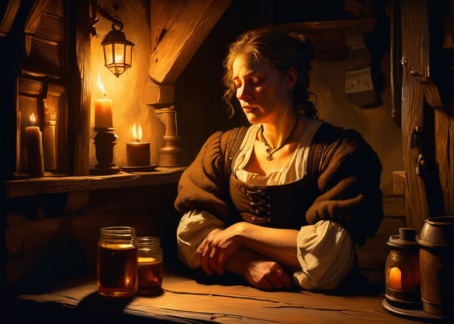
Marta nalewa piwo i mierzy gości wzrokiem — w takim miejscu jedno bez drugiego nie istnieje.
Wieczór osiadł na kamieniach jak sadza, gdy Mizel stanął pod przekrzywionym szyldem gospody
„Pod Złamanym Rogiem", na skraju małego, zabłoconego miasteczka. Z okapów wciąż kapała woda, a
ulicę rozorały koła wozów. Ze środka sączyło się ciepłe, miodowe światło i zapach mokrej słomy,
torfowego dymu i kwaśnego piwa; obok studni leżało przewrócone wiadro, jakby ktoś porzucił je w
pośpiechu.
W izbie o niskim stropie kilku górników mówiło ciszej, niż wypada w karczmie, jakby każdy
nasłuchiwał cudzych słów bardziej niż własnych. Za ladą stała barczysta kobieta o spracowanych
dłoniach — Marta — i jednym spojrzeniem oceniała, czy nowy gość zapłaci bez targu. Mizel zamówił
strawę i piwo, a gdy padła cena, położył dwie monety bez słowa.
MartaPrzynajmniej umiesz płacić bez gadania.
Ludzie, co wpadają tu z samymi pytaniami, zwykle kończą z pustymi rękami albo zębami na podłodze.
Gulasz był gęsty i tłusty, piwo cierpkie i chłodne. Lecz wzrok Mizela raz po raz wracał w kąt
izby — najciemniejszy skrawek sali, odcięty od reszty jak studnia bez dna.
Człowiek z sygnetem
Dłoń przy kubku była szczupła, blada i bez odcisków. To nie był człowiek, który pracuje rękami.
W kącie siedział zakapturzony mężczyzna. Mizel przeniósł miskę i kufel na stół naprzeciw niego
i usiadł, nieproszony. Spod kaptura widać było tylko skrawek wychudzonego policzka, cienką linię
ust i dłoń przy kubku — szczupłą, bladą, pozbawioną odcisków człowieka pracy. Na palcu raz po raz
błyskał sygnet, by zaraz zniknąć w cieniu.
Rozmowa toczyła się ostrożnie, jak pojedynek na słowa — żaden z nich nie chciał odsłonić się
pierwszy. W końcu człowiek z sygnetem przeszedł do rzeczy: była robota. Coś trzeba było
odebrać, cicho i bez smrodu.
ZleceniodawcaDziesięć złotych po wykonaniu.
Teraz dostajesz tylko zlecenie i okazję. Po zmroku pod kapliczką — nie wcześniej.
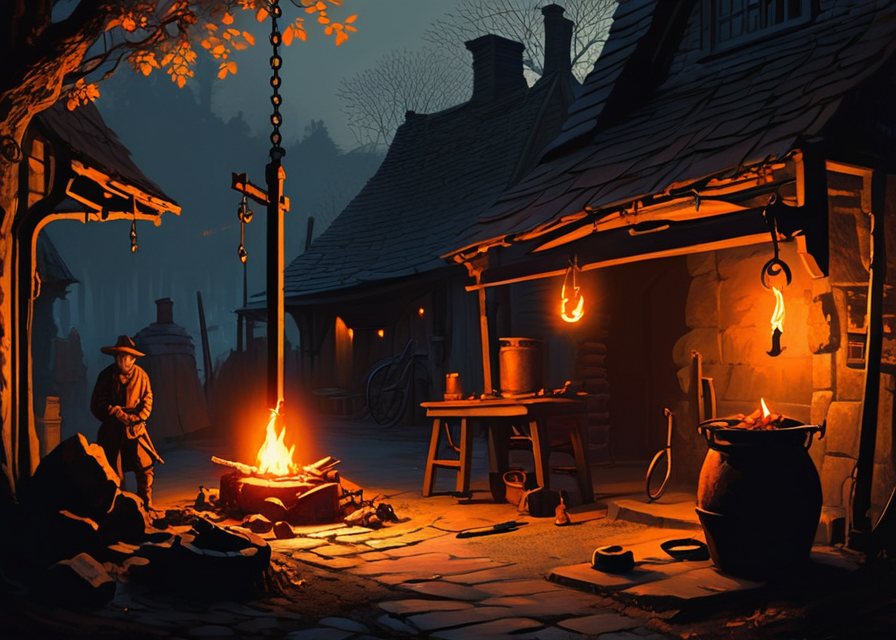
Kuźnia Wujka — żelazo, gwoździe, naprawy. Wszystko, czego trzeba, nim ruszy się w noc.
Mizel znał ludzi, którzy znikają, gdy przychodzi płacić. Nie zamierzał ruszać w noc na samą
obietnicę cienia w kapturze — zażądał, by zapłata trafiła z góry do rąk Marty, jako zastaw.
Mężczyzna patrzył na niego dłuższą chwilę, wystukując palcem suchy rytm o blat, ważąc jego
bezczelność — i rozsądek. W końcu skinął: jeśli Mizel nie wróci do świtu, dług przepada; jeśli
wróci, Marta odda mu zapłatę z nawiązką.
Pergamin został po stronie Mizela; sygnet mignął i znikł w cieniu. Zanim wyruszył, złodziej
wypytał jeszcze Martę o miejscowy kram — Kuźnię Wujka przy głównej drodze, gdzie
sprzedawano żelazo, gwoździe i naprawy — i dokupił, czego brakowało mu na nocną wyprawę. Potem
czekał, aż światło za oknami zacznie gasnąć.
Nocna robota pod kapliczką
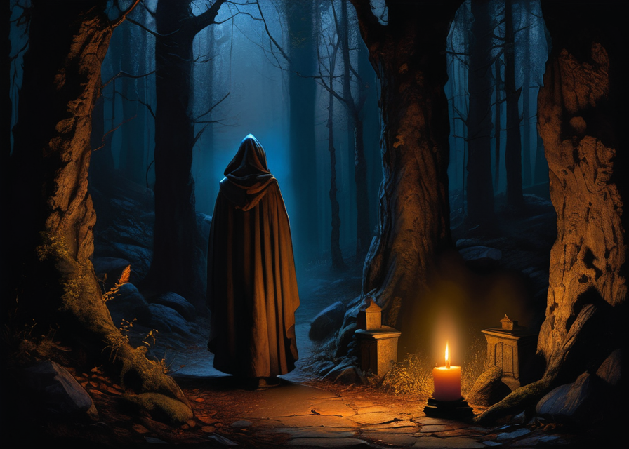
Mądry złodziej nie staje tam, gdzie kazano mu stanąć. Najpierw patrzy — z cienia.
Miasteczko po zmroku tonęło w błocie i ciszy. Mizel nie poszedł jednak prosto pod kapliczkę,
jak mu kazano — to byłby błąd, który kończy się nożem w plecach. Zamiast tego okrążył miejsce od
lasu i przykucnął nisko między mokrymi pniami, tam gdzie mech tłumił każdy ruch, i pozwolił, by
noc zrobiła z niego kolejny ciemny kształt. Wstrzymał oddech, odciął zmysły od chłodu w palcach i
wilgoci w bucie, aż został tylko las — i ten jeden obcy dźwięk, który do nocy nie należał.
Z ukrycia dojrzał dwóch ludzi. Jeden z nożem w dłoni czaił się przy ścieżce, drugi stał nieco
dalej, wyraźnie czekając na kuriera, którego miał spotkać. Pułapka albo nieufność — w tym świecie
to często to samo. Mizel zaczął się skradać: przenosił ciężar ciała powoli, jakby stąpał po
cienkim lodzie, zsuwając się między pniami o kilka kroków bliżej, aż nożownik znalazł się niemal
na wyciągnięcie ręki, całą uwagę wbijając w człowieka przy ścieżce — nie w ciemność za plecami.
Nóż do gardła
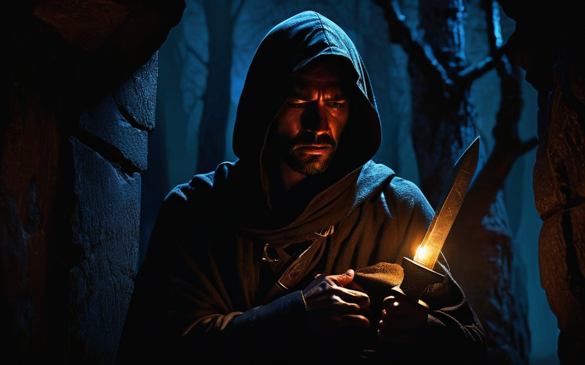
Cisza pęka w jednej brutalnej chwili. Teraz wszystko zależy od tego, kto pierwszy przejmie przewagę.
Mizel wypadł z cienia nisko i gwałtownie. Nożownik dopiero zaczynał odwracać głowę, gdy złodziej
wszedł mu za plecy, zarzucił ramię na szyję i przycisnął ostrze tuż pod żuchwą. Ciało mężczyzny
natychmiast stwardniało ze strachu; jego dłoń z nożem zawisła odciągnięta na bok, a oddech urwał
się w świszczącym wciągnięciu powietrza. Wystarczyłby najmniejszy nacisk, by skóra puściła.
MizelDrgnij mocniej, a nóż sam poderżnie ci
gardło. Nie wiem, kim jesteście, i mam to w nosie. Mam tylko dostarczyć wiadomość — i tyle zrobię.
Drugi mężczyzna mrużył oczy w ciemności, ważąc, czy warto ryzykować życie wspólnika. Lecz Mizel
nie przyszedł zabijać — przyszedł odebrać. Schylił się po żelazny medalion,
cięższy, niż wskazywałby jego rozmiar, a pergamin zostawił tam, gdzie padł. Potem zelżył nacisk
ostrza; nożownik wciągnął powietrze jak topielec wynurzony spod czarnej wody i runął kolanami w
mokre liście.
MizelDobiliśmy targu, więc nasze drogi się
rozchodzą. Pamiętaj tylko: tak łatwo, jak was dziś podszedłem, znajdę was drugi raz.
Nikt nie ruszył za nim, gdy znikał między pniami. W tym świecie groźba wypowiedziana spokojnie
waży więcej niż krzyk — a obaj wiedzieli już, że nie rzucał słów na wiatr.
Powrót i zapłata
Do gospody „Pod Złamanym Rogiem" Mizel wrócił przed świtem, z błotem na nogawkach i zimnym
żelazem medalionu w kieszeni. Najpierw uspokoił Martę — nie po to przeszedł całą noc, by skończyć
w burdzie tuż przed metą — a potem usiadł naprzeciw zakapturzonego i rzucił mu na blat zawiniątko.
MizelW obu przypadkach się myliłeś.
Mężczyzna nie sięgnął po medalion od razu; najpierw spojrzał na pakunek, potem na Mizela, jakby
próbował dosłyszeć to, czego złodziej nie powiedział. Płomień świecy drgnął między nimi — a potem
zapłata przeszła z rąk Marty do kieszeni Mizela, ciężka i prawdziwa. Złodziej dopił piwo, skinął
głową na pożegnanie i rzucił od niechcenia, że może kiedyś jeszcze przydadzą się sobie nawzajem.
Wynajął od Marty pokój na górze, położył się w ubraniu, z dłonią blisko noża bardziej z
przyzwyczajenia niż z rozsądku, i pozwolił, by zmęczenie wreszcie go dogoniło. Rankiem zszedł do
głównej sali z zebranymi rzeczami — nieco bogatszy, wciąż żywy, gotów na to, co przyniesie droga.
Świat nie stał się przez tę jedną noc ani odrobinę łaskawszy. Ale Mizel przetrwał ją — i
zarobił.
To są właśnie pierwsze kroki: nie wielka legenda, lecz jedna przeżyta noc, w której
każda decyzja coś znaczyła. Twoja postać zacznie podobnie — w jakiejś gospodzie,
przy jakimś stole, z jednym powodem, by ruszyć dalej. Co zdarzy się potem, nie jest zapisane.
Rozstrzygną to twoje wybory, słowa, które wypowiesz przy stole — i kość, gdy stawka będzie zbyt
wysoka, by pewność była możliwa. Jak działa ta kość, dowiesz się na następnej stronie.
Rozdział pierwszy
I · MechanikaTest umiejętności
Serce każdej niepewnej chwili
Większość tego, co robisz w tej grze, udaje się bez żadnego rzutu. Przejdziesz
przez izbę, dobędziesz miecza, zapytasz karczmarza o drogę — a Mistrz Gry po prostu opowie, co się
dzieje, i gra toczy się dalej. Kość budzi się dopiero wtedy, gdy splatają się dwie rzeczy naraz:
coś jest dla ciebie naprawdę ważne i wynik nie jest pewny. Wspinasz się po
oblodzonym murze nad przepaścią. Próbujesz spojrzeć w oczy strażnikowi i skłamać tak, by ci
uwierzył. Schodzisz z drogi nożowi, który wyrósł z ciemności. W takich chwilach — i tylko w
takich — sięgasz po kość.
Wszystkie one rozstrzygają się w jeden sposób. Rzucasz
k20k20Kość
dwudziestościenna — jedyna kość, którą rozstrzygasz testy. Daje wynik od 1 do 20, każdy równie
prawdopodobny., dorzucasz do niej to, w czym jesteś dobry, i porównujesz sumę z
Progiem TrudnościPróg Trudności (PT)Liczba,
którą musisz osiągnąć. Im trudniejsze zadanie, tym wyższa. 8 łatwe · 12 średnie ·
16 trudne · 20 ekstremalne · 24+ legendarne., który ustala
Mistrz Gry. Dorównasz progowi lub go przekroczysz — udaje się. Nie dorównasz — nie wychodzi. To
jedna reguła; nauczysz się jej raz i poniesie cię przez całą grę.
k20 + modyfikator cechy + ranga umiejętności + premia z biegłości
≥PT
Zdajesz test, gdy suma rzutu i premii dorówna Progowi Trudności albo go przekroczy.
Zanim rozłożymy te premie na czynniki, zobaczmy regułę w działaniu — bo dopiero przy stole
nabiera ona ciała. Wyobraź sobie podróżnika, którego od celu dzieli już tylko jeden zamknięty
most — i celnik, którego nie da się ominąć.
Scena · Most celny nad Reiką
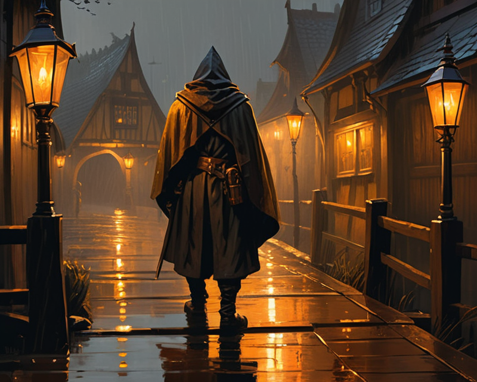
Deszcz bębni o deski mostu. Po drugiej stronie szlabanu stoi celnik w
przemoczonej pelerynie, jedną dłoń trzymając na trzonku halabardy.
CelnikMyto — pięć złotych albo zawracaj,
wędrowcze. Most zamknięty po zmroku, a noc blisko.
Mierzy cię wzrokiem od zabłoconych butów po kaptur. W sakiewce masz dwie
monety, a za plecami żadnej drogi w bok.
GraczPatrzę mu prosto w oczy i mówię
spokojnie: jadę z pilnym listem do garnizonu, a komendant nie będzie łaskaw dla człowieka,
który zatrzymał mnie w deszczu.
To blef — nie masz żadnego listu. Próbujesz go przekonać
tonem pewności i groźbą wiszącą w tle. Test opiera się na
CharyzmieCharyzma (CHA)Wrodzony
dar przekonywania, uroku i panowania nad rozmową. Rządzi umiejętnościami: Perswazja, Oszustwo,
Zastraszanie.Charyzma;
celnik jest nieufny, lecz zmęczony — Mistrz Gry ustala próg
Średni (12)Próg TrudnościŚredni
= 12. Typowe wyzwanie; tu: nieufny, lecz zmęczony strażnik..
Test Perswazjicecha:
CharyzmaCharyzma (CHA)Dar
przekonywania i uroku. Modyfikator z Charyzmy dolicza się do testów rozmowy.Charyzma
Rzut k2013
Modyfikator Charyzmy (14)+2
Perswazja · ranga 1+1
Wynik 16≥ Próg 12margines +4
SukcesCelnik prycha, ale unosi szlaban.
CelnikJedź. I powiedz komendantowi, że Hauke
wpuścił cię bez myta — może raz wspomni o mnie dobrym słowem.
Nie uwierzył do końca — lecz uznał, że ryzyko kłopotu
nie jest warte dwóch złotych, których i tak przy tobie nie dostrzegł. Gdyby rzut wypadł o
kilka oczek gorzej, historia potoczyłaby się inaczej. Kość nie mówi „tak" albo „nie". Mówi, w
którą stronę przechyli się scena.
Z czego składa się twój wynik
Do surowego rzutu kością dokładasz trzy liczby. Każda opowiada inną część prawdy o tym, jak
twoja postać radzi sobie akurat z tym zadaniem: ile ma wrodzonego talentu, ile
wyćwiczonej wprawy i czy doszła już do prawdziwego mistrzostwa.
Modyfikator cechy — wrodzony talent
Każdą postać opisuje siedem cechSiedem cechSiła,
Zręczność, Kondycja, Inteligencja, Mądrość, Charyzma i Szczęście. 10 to ludzka przeciętność.Siedem cech:
Siła, Zręczność, Kondycja, Inteligencja, Mądrość,
CharyzmaCharyzma (CHA)Dar
przekonywania, uroku i dowodzenia. Rządzi Perswazją, Oszustwem i Zastraszaniem.Charyzma
i Szczęście. Wartość 10 to zwykła ludzka średnia. Do rzutu nie dopisujesz jednak samej wartości,
lecz modyfikatorModyfikator cechy= (cecha
− 10) ÷ 2, zaokrąglone w dół. Cecha 14 → +2, 10 → +0, 8 → −1, 18 →
+4. — to, o ile twoja postać odstaje od przeciętności:
modyfikator = ( wartość cechy − 10 ) ÷ 2 (zaokrąglone w dół)
Charyzma 14 daje więc +2, przeciętna 10 daje +0, a niezgrabna
8 to −1. Mistrz Gry wskazuje, która cecha rządzi danym testem — i często zależy
to od tego, jak opiszesz swoje działanie. Wyważasz drzwi ramieniem? Siła. Otwierasz je
wytrychem?
ZręcznośćZręczność (DEX)Zwinność,
refleks i precyzja dłoni. Rządzi Skradaniem, Akrobatyką, otwieraniem zamków i unikami.Zręczność.
Przekonujesz strażnika ciepłym słowem albo cichą groźbą? Charyzma. To dlatego warto mówić,
w jaki sposób coś robisz — z opisu wynika reszta.
Ranga umiejętności — wyuczona wprawa
Tam, gdzie cecha mówi o talencie danym od urodzenia,
ranga umiejętnościRanga umiejętnościPoziom
wyćwiczenia konkretnej umiejętności (Skradanie, Perswazja, Medycyna…), zwykle 1–3. Dodawana
wprost do rzutu: ranga 2 → +2.Umiejętności
mówi o latach ćwiczeń. Skradanie, Perswazja, Wiedza Tajemna, Medycyna — każdej uczysz się osobno i
każda ma swoją rangę, zwykle od 1 do 3. Rangę dopisujesz do rzutu wprost: kto ma w Skradaniu rangę
2, dolicza +2. Im dłużej szlifujesz dane rzemiosło, tym pewniejsza twoja dłoń.
Premia z biegłości — pieczęć mistrzostwa
Gdy ranga w umiejętności sięga 3, przekraczasz granicę między „umiem to" a
mistrzostwem. Od tej chwili każdy test tą umiejętnością niesie dodatkową
premię z biegłości +2Premia z biegłościDodatkowe
+2 doliczane automatycznie, gdy twoja ranga w umiejętności osiąga 3. Nagroda za prawdziwą
specjalizację.. To nagroda za głębię, nie szerokość — powód, dla którego opłaca się
doprowadzić jedno rzemiosło do perfekcji, zamiast liznąć dziesięciu po wierzchu. Mistrz złodziei z
rangą 3 w Skradaniu dolicza do rzutu rangę i premię: razem +5, zanim
jeszcze doda swoją Zręczność.
Próg Trudności
Zanim padnie kość, Mistrz Gry ustala
prógPróg Trudności (PT)Liczba
do pokonania. Wynika z okoliczności — nie zgadujesz jej. Patrz skala niżej. — liczbę,
którą musisz osiągnąć. Nie wymyśla jej z powietrza; wyrasta ona z okoliczności. Oto skala, na
której wspiera się cała gra:
Skala Progów Trudności (PT)
PT
Trudność
Kiedy
8
Łatwe
Sprzyjające warunki, właściwe narzędzie, spokój.
12
Średnie
Typowe wyzwanie dla wprawnej osoby.
16
Trudne
Pośpiech, ciemność, brak narzędzi, presja.
20
Ekstremalne
Na granicy ludzkich możliwości.
24+
Legendarne
Czyny, o których śpiewa się pieśni.
Sprawiedliwy próg
Dobry Mistrz Gry dobiera trudność do twojej postaci i twoich narzędzi. Bohater 1. poziomu z
dobrym wytrychem otwiera prosty zamek przy progu Łatwym lub Średnim — nie Trudnym. Szesnastka i
wyżej należy do chwil, gdy naprawdę wszystko sprzysięga się przeciwko tobie: ciemność, pośpiech,
drżące ręce. Rutyna nie powinna być karą.
Jak czytać wynik
Rzuć, dodaj premie, porównaj z progiem. Ale wynik to nie tylko „udało się" albo „nie". Liczy się
marginesMarginesRóżnica:
twój wynik − PT. Decyduje, jak bardzo się udało (lub nie). +5 i więcej → krytyk; −5 i mniej →
krytyczna porażka. — o ile twój wynik pobił próg albo do niego nie dosięgnął. To on
rozstrzyga, czy sukces jest gładki czy spektakularny, a porażka drobna czy katastrofalna. Każdy
test umiejętności kończy się na jednym z czterech stopni:
Sukces krytycznyNaturalna 20, albo margines +5 i więcej. Udaje się wspaniale — efekt
wzmocniony, dodatkowa korzyść, obraz, który zapamiętasz.
SukcesMargines od 0 do +4. Robisz to, co zamierzałeś — czysto, bez fajerwerków.
PorażkaMargines od −1 do −4. Nie wyszło, lecz bez katastrofy. Fabuła toczy się
dalej, zwykle w mniej wygodną stronę — porażka pcha historię naprzód.
Porażka krytycznaNaturalna 1, albo margines −5 i gorzej. Nie dość, że się nie udało —
dochodzi komplikacja. Pęka wytrych, alarmuje się straż, osuwa kamień pod stopą.
Dwa wyniki na kości mają moc absolutną, niezależną od premii i progu.
Naturalna 20Naturalna 20Sama
kość pokazuje 20 — zawsze sukces krytyczny, choćby próg był wysoki. „Naturalna", bo liczy się goła
kość, przed premiami. — sama kość pokazuje dwadzieścia — to zawsze sukces krytyczny.
Naturalna 1Naturalna 1Sama
kość pokazuje 1 — zawsze porażka krytyczna z komplikacją, niezależnie od premii. to
zawsze porażka krytyczna. Choćby próg był śmiesznie niski albo niebotyczny — goła kość ma ostatnie
słowo.
Bez liczb przy stole
Te progi i marginesy to maszyneria pod maską. Przy stole Mistrz Gry nie wyrecytuje ci „margines
+6, sukces krytyczny" — opowie, jak bezszelestnie wtapiasz się w cień, a strażnik mija cię o
krok, nic nie przeczuwając. Liczby liczy system; ty słyszysz historię.
Kość w ferworze walki
Ta sama reguła nie znika, gdy dobywasz broni. W walce wymiana ciosów ma własne, dokładniejsze
zasady — opisuje je rozdział o WalceRozdział IV — WalkaTrafienia
i obrażenia rządzą się osobnymi regułami: naturalna 20 podwaja obrażenia, a margines nie wpływa na
same ataki. Tu pokazujemy test umiejętności w środku walki.Walka
— lecz w wirze starcia wciąż raz po raz robisz coś, co jest testem umiejętności:
odskakujesz, łapiesz równowagę, wspinasz się, gasisz płomień na rękawie. Takie chwile rozstrzygasz
dokładnie tak, jak nauczyłeś się przed chwilą.
Scena · Skraj boru, o zmierzchu
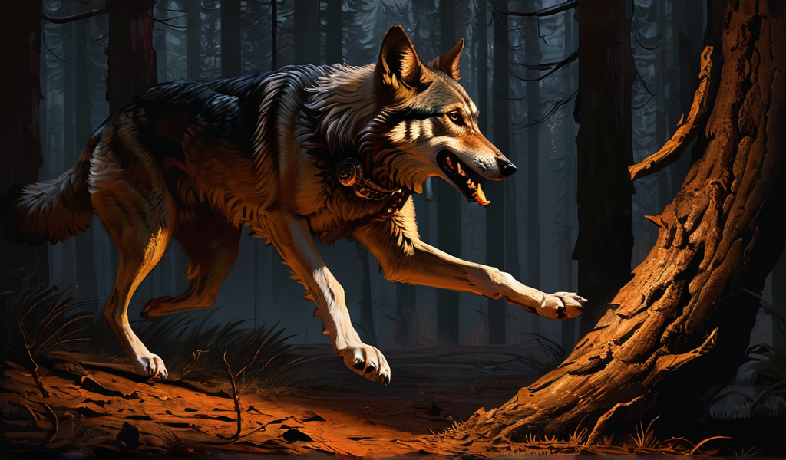
Pierwszy wilk pada od twojego cięcia, lecz drugi już jest w powietrzu — kłębek
mokrej sierści i kłów, mierzący prosto w twoje gardło. Nie zdążysz znów zamachnąć się mieczem.
Masz ułamek chwili, by zejść z linii skoku.
GraczRzucam się w bok, w mokre paprocie, byle
zejść mu z drogi!
To unik — gwałtowny, instynktowny ruch całego ciała. Liczy
się tu czysta zwinność, więc Mistrz Gry wzywa
rzut obronny ZręcznościRzut obronnyTest
cechy, gdy coś dzieje się tobie i musisz tego uniknąć (skok bestii, pułapka, podmuch
ognia). Liczysz k20 + modyfikator samej cechy, bez umiejętności.. Bestia jest
szybka — próg Trudny (16)Próg TrudnościTrudny
= 16. Wysoka poprzeczka: zwinny, rozpędzony drapieżnik..
Rzut obronnycecha:
ZręcznośćZręczność (DEX)Zwinność
i refleks. Modyfikator z Zręczności decyduje o unikach i akrobatyce.Zręczność
Rzut k2017
Modyfikator Zręczności (15)+2
Wynik 19≥ Próg 16margines +3
SukcesKły kłapią o próżnię tam, gdzie
mgnienie wcześniej było twoje gardło — wilk ląduje niezgrabnie, odsłaniając bok.
A gdyby na kości padła
naturalna 1Naturalna 1Goła
jedynka — zawsze porażka krytyczna. Nieważne, jak wysoka Zręczność.? Nie po
prostu „nie zdążasz" — noga grzęźnie w korzeniu, tracisz równowagę, a wilk wbija się w ciebie
całym ciężarem. Porażka krytyczna nie odbiera tylko sukcesu; dorzuca nieszczęście.
Dwie sceny, dwa różne testy — rozmowa na moście i skok o włos od kłów — a pod spodem ta sama,
jedyna reguła: kość, premie, próg, margines. Opanuj ją tutaj, a będzie ci służyć w każdej
niepewnej chwili tego mrocznego świata: od targu na rynku po ostatni cios w ciemnej krypcie.
Rozdział drugi
II · PostaćSiedem cech
Z czego ulepiona jest twoja postać
Zanim twoja postać cokolwiek zrobi, opisuje ją siedem liczb. To one mówią,
czy z natury jesteś silny czy zwinny, bystry czy ujmujący — i to z nich bierze się
modyfikatorModyfikator cechy=
(cecha − 10) ÷ 2, w dół. Wartość 10 to ludzka średnia (+0). 14 → +2, 8 → −1, 18 → +4.,
który dokładasz do każdego rzutu. Cecha o wartości 10 to zwykła ludzka średnia;
wszystko powyżej to dar, wszystko poniżej — ułomność.
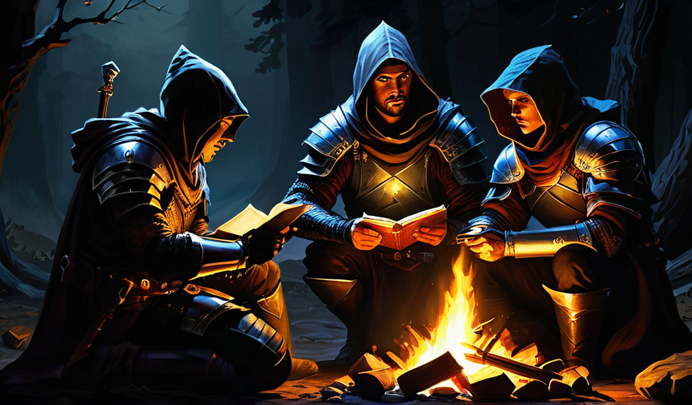
Wojownik, łotrzyk i uczony — te same siedem liczb, trzy zupełnie różne sposoby na przetrwanie.
Cech nie wybierasz przy każdym teście samodzielnie — robi to Mistrz Gry, dopasowując właściwą do
tego, co i jak próbujesz zrobić. Wyważasz drzwi? Siła. Wymykasz się strażnikowi?
Zręczność. Rozszyfrowujesz starą inskrypcję? Inteligencja. Ta sama scena potrafi wezwać różne cechy
zależnie od tego, jak ją rozegrasz — dlatego zawsze warto opisać swoje podejście.
Czym rządzi każda cecha
Oto wszystkie siedem cech, jedna po drugiej — co oznacza wysoka wartość, jakie testy się o nią
opierają i kiedy Mistrz Gry po nią sięgnie.
Siła STR
Tężyzna mięśni i siła ciosu. Napędza Atak i obrażenia bronią siłową, Atletykę, Wspinaczkę i wyważanie. Wysoka Siła to wojownik, który rozłupuje tarcze; niska — uczony, który nie udźwignie własnego plecaka.
„Naprę ramieniem na zaryglowane wrota." Test Atletyki (Siła).
Zręczność DEX
Zwinność, refleks i precyzja dłoni. Rządzi Skradaniem, Unikiem, Otwieraniem zamków, Akrobatyką oraz Inicjatywą — kto działa pierwszy w walce. Cecha numer jeden łotrzyka.
„Wymykam się strażnikowi bocznym przejściem." Test Skradania (Zręczność).
Kondycja CON
Wytrzymałość ciała. Bezpośrednio napędza punkty życia (rośną z każdym poziomem o modyfikator CON) oraz opór wobec trucizn, chorób, zimna i wysiłku. Cicha cecha, która decyduje, jak długo żyjesz.
„Zaciskam zęby i brnę dalej mimo trucizny." Test Wytrzymałości (Kondycja).
Inteligencja INT
Wiedza i rozumowanie. Cecha wszystkich czarów uczonego — i ich celności, i puli many — a do tego Wiedzy, Arkanów, Dochodzenia i Alchemii.
„Odczytuję runy na zwoju." Test Arkanów (Inteligencja).
Mądrość WIS
Czujność i intuicja. Rządzi Spostrzegawczością, Przetrwaniem, Medycyną, Tropieniem i czytaniem ludzi (Wnikliwość). To także odporność, którą rzucasz, gdy ktoś próbuje cię oczarować, uśpić czy przekląć.
„Przeszukuję podłogę pod kątem pułapek." Test Spostrzegawczości (Mądrość).
Charyzma CHA
Siła wpływu na ludzi. Rządzi Perswazją, Oszustwem, Zastraszaniem i Targowaniem — a także ceną, jaką dostaniesz u kupca. Cecha tych, którzy rozwiązują problemy słowem zamiast stalą.
„Przekonuję celnika, że jadę z pilnym listem." Test Perswazji (Charyzma).
Szczęście LCK
Ślepy traf wpleciony w los postaci. Wpływa na jakość łupów, losowe zdarzenia i te chwile, gdy wszystko zależy od kaprysu fortuny. Ulubiona druga cecha łotrzyka.
„Przetrząsam kieszenie pokonanego — coś cennego?" Wysokie Szczęście poprawia łup.
Trzy archetypy
Te same siedem cech układa się w trzy zupełnie różne drogi. Wybór archetypu to wybór tego, na
co stawiasz: pięść, cień czy słowo zaklęcia. Każdy ma inną bazę punktów życia i inne cechy
wiodące.
Wojownik — pan stali
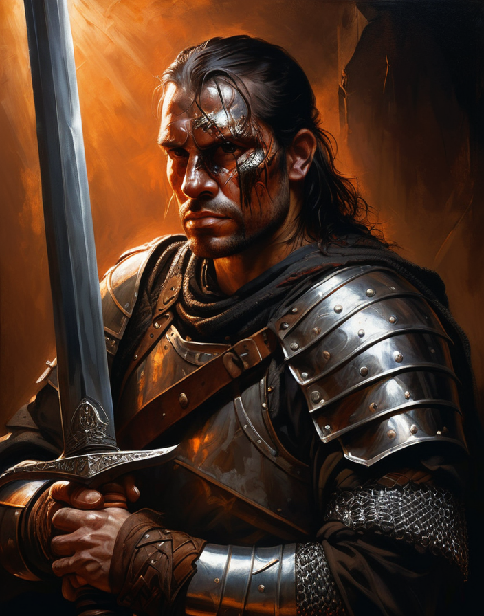
Tam, gdzie inni szukają wyjścia, wojownik szuka celu.
Cechy wiodące: Siła i Kondycja. HP bazowe: 10 — najtwardszy z trójki. Wojownik
to mistrz walki wręcz: każdy jego cios niesie dodatkowe obrażenia z Siły, a wysoka Kondycja daje mu
największą pulę życia w drużynie. Sięga po ciężką broń i tarczę, stoi w pierwszym szeregu i znosi
ciosy, które innych powaliłyby od razu. Cena? Nie rzuca czarów — jego odpowiedzią na każdy
problem jest stal.
Gra nim ten, kto chce rozwiązywać sytuacje wprost i przetrwać najcięższe starcia.
Łotrzyk — cień z ostrzem
Najlepszy cios to ten, którego wróg nigdy nie zobaczył.
Cechy wiodące: Zręczność i Szczęście. HP bazowe: 8 — średnia wytrzymałość,
ogromna wszechstronność. Łotrzyk włada największą liczbą umiejętności ze wszystkich
archetypów: skrada się, otwiera zamki, opróżnia kieszenie i bije z zaskoczenia, zadając wtedy
premiowe obrażenia. To właśnie archetyp Mizela ze Wstępu. Słabszy w otwartej walce
niż wojownik, lecz potrafi jej w ogóle uniknąć — albo rozstrzygnąć ją jednym cichym ciosem, zanim
się zacznie.
Gra nim ten, kto woli spryt i podstęp od czołowego natarcia.
Uczony — władca many
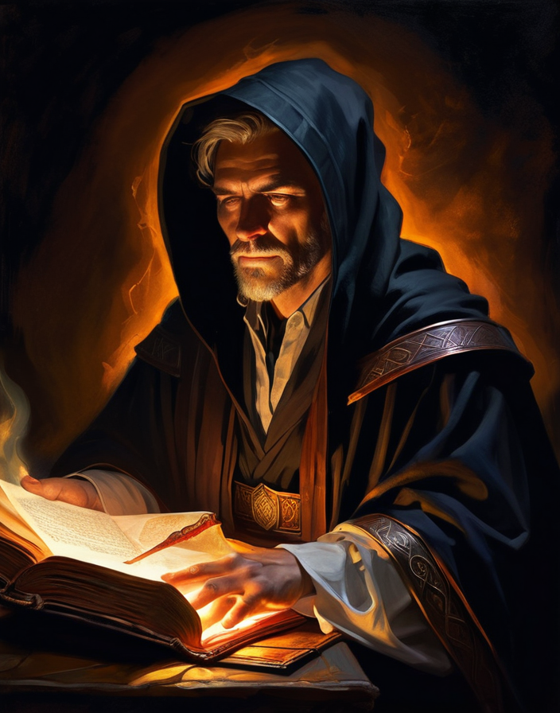
Jedno właściwe słowo potrafi zmienić więcej niż sto ciosów.
Cechy wiodące: Inteligencja i Mądrość. HP bazowe: 6 — najkruchszy z trójki, lecz
jedyny, który włada manąManaZasób
czarów uczonego: 8 + modyfikator INT × poziom. Tylko uczony nią dysponuje. Szczegóły w
rozdziale VII.Magia uczonego
i czarami. Garść zaklęć pozwala mu spopielić grupę wrogów, uśpić strażnika albo zasklepić ranę
towarzysza. Musi jednak trzymać się z dala od zwarcia — kilka mocnych ciosów i pada. Uczony to
potęga kupiona za kruchość.
Gra nim ten, kto chce odmieniać bieg walki z dystansu — i lubi ryzyko.
Punkty życia i mana — wzór
Twoja wytrzymałość rośnie z poziomem. Punkty życia = HP bazowe archetypu + modyfikator
Kondycji × poziom. Mana uczonego liczy się analogicznie z Inteligencji.
Przykład — postacie na 3. poziomie z Kondycją 14 (mod +2)
Archetyp
Wzór HP
Razem HP
Wojownik
10 + 2 × 3
16
Łotrzyk
8 + 2 × 3
14
Uczony
6 + 2 × 3
12
Dlatego nawet kruchy uczony z wysoką Kondycją przeżyje dłużej, niż się wydaje — a wojownik, który
zaniedbał CON, pada szybciej, niż przystoi jego sławie. Uczony na 3. poziomie z Inteligencją 16
(mod +3) ma do tego 8 + 3 × 3 = 17 many na czary.
Rozdział trzeci
III · PostaćUmiejętności i biegłość
Wyuczona wprawa, której nie da wrodzony talent
Cecha mówi, jak pewną masz dłoń. Umiejętność mówi, ile razy robiłeś już to samo w ciemności.
Cecha to wrodzony talent; umiejętność to lata ćwiczeń.
Dwie postaci o tej samej Zręczności otworzą ten sam zamek zupełnie inaczej, jeśli jedna spędziła
młodość na wyłamywaniu zamków, a druga widzi wytrych pierwszy raz w życiu. Postać włada
czterdziestoma jeden umiejętnościami — bojowymi, łotrzykowskimi, towarzyskimi, uczonymi i
rzemieślniczymi — i każdą trenuje osobno. Ten rozdział opisuje je wszystkie, jedna po drugiej, z
przykładami, byś nigdy nie musiał zgadywać, której użyć.
Ranga i biegłość — krok po kroku
Każda umiejętność, którą znasz, ma rangęRanga umiejętnościPoziom
wyćwiczenia, od 1 do 3. Dodawana wprost do rzutu. od 1 do 3, którą dopisujesz wprost do
rzutu: ranga 2 w Skradaniu to równe +2. Umiejętności, której nie znasz, też możesz
spróbować — rzucasz wtedy z samym modyfikatorem cechy, bez bonusu rangi (i często z wyższym progiem,
bo działasz na ślepo).
Gdy ranga sięgnie 3, przekraczasz próg mistrzostwa i zyskujesz dodatkową
premię z biegłości +2Premia z biegłościDodatkowe
+2, gdy ranga umiejętności osiąga 3. Nagroda za specjalizację.. Prześledźmy to
na liczbach, bo to jeden z najważniejszych progów w grze:
Łotrzyk z Zręcznością 16 (mod +3) skrada się — jak rośnie jego rzut
Ranga Skradania
Co dolicza
Łączny bonus
brak (nieuczony)
tylko +3 z Zręczności
+3
ranga 1
+3 ZRĘ, +1 ranga
+4
ranga 2
+3 ZRĘ, +2 ranga
+5
ranga 3
+3 ZRĘ, +3 ranga, +2 biegłość
+8
Skok z rangi 2 na 3 daje aż +3 do rzutu — to dlatego specjalizacja popłaca:
lepiej doprowadzić jedno rzemiosło do perfekcji niż liznąć dziesięciu po wierzchu.
Jak Mistrz Gry wybiera cechę i umiejętność
Nie wybierasz testu z listy — deklarujesz działanie, a Mistrz Gry tłumaczy je na
umiejętność i cechę. Klucz jest prosty: opisz, co i jak robisz, a reszta wynika
sama. Ta sama scena potrafi wezwać różne testy zależnie od podejścia:
Jedne drzwi, trzy różne testy
Chcesz dostać się za zaryglowane drzwi. „Wyważam je
ramieniem" → Atletyka (Siła). „Podważam zamek
wytrychem" → Otwieranie zamków (Zręczność). „Wmawiam
strażnikowi, że mam prawo wejść" → Oszustwo (Charyzma). Trzy drogi do tego samego progu —
i to ty wybierasz, którą pójdziesz, samym opisem.
Część umiejętności silnik rozpoznaje nawet po słowach kluczowych: powiedz „skradam się",
a wezwie Skradanie; „bandażuję ranę" — Medycynę; „blefuję" — Oszustwo. Dlatego mów
konkretnie: opis nie jest ozdobą, lecz częścią mechaniki.
Katalog wszystkich umiejętności
Poniżej każda z czterdziestu jeden umiejętności, pogrupowana wedle cechy, która nią rządzi.
Przy każdej znajdziesz, do czego służy i przykład użycia przy stole.
ZręcznośćDEX · zwinność, refleks, precyzja dłoni
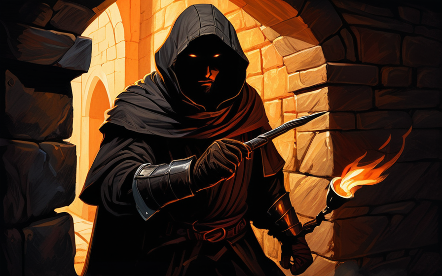
Skradanie — sztuka bycia tam, gdzie nikt cię nie szuka.
Skradanie DEX
Poruszanie się bezszelestnie i pozostawanie poza polem widzenia. Najważniejsza umiejętność łotrzyka — pozwala minąć straż, podejść wroga niezauważonym i uderzyć z zaskoczenia.
„Przemykam wzdłuż muru, trzymając się cienia." Sukces (PT 8 wobec znudzonej straży) — strażnik mija cię o krok.
Otwieranie zamków DEX
Podważanie zamków wytrychem lub improwizowanym narzędziem. Z właściwym kluczem rzut nie jest potrzebny — drzwi otwierają się same.
„Wsuwam wytrych i wymacuję zapadki." Prosty zamek to PT 12; krytyczna porażka łamie wytrych w środku.
Akrobatyka DEX
Utrzymanie równowagi, salta, przeciskanie się i lądowanie po upadku. Pozwala przejść po wąskiej belce czy zamortyzować skok z wysokości.
„Skaczę z dachu na sąsiedni i przetaczam się przy lądowaniu." Sukces zmniejsza obrażenia od upadku.
Unik DEX
Bojowa reakcja: zejście z linii ciosu. To unik obrońcy decyduje, czy atakujący w ogóle trafia (rozdział IV).
„Odskakuję spod topora."k20 + ZRĘ przeciw atakowi wroga.
Inicjatywa DEX
Szybkość reakcji na początku starcia. Wyższy wynik oznacza, że działasz przed wrogiem.
k20 + ZRĘ raz na walkę; kto wyrzuci więcej, rusza pierwszy.
Kieszonkostwo DEX
Niepostrzeżone wyjmowanie sakiewek, kluczy i drobiazgów — albo podrzucanie ich komuś.
„Ocieram się o kupca i sięgam po jego mieszek." Porażka = kupiec łapie cię za rękę.
Walka dwoma broniami DEX
Sprawne władanie bronią w obu dłoniach naraz, pozwalające na dodatkowy cios kosztem celności.
„Tnę sztyletem, a drugim od razu dźgam." Wyższa ranga zmniejsza karę za drugi atak.
Jeździectwo DEX
Panowanie nad wierzchowcem w galopie, w walce i w trudnym terenie.
„Spinam konia i przeskakuję przez powalony pień." Porażka — wierzchowiec staje dęba.
SiłaSTR · mięśnie, atak siłowy, tężyzna
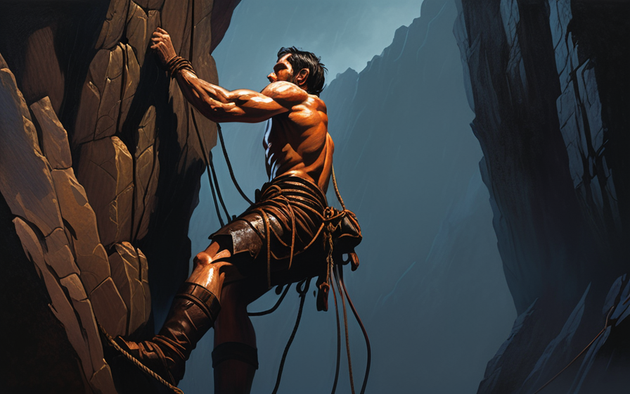
Wspinaczka — gdy jedyna droga prowadzi w górę, po śliskim kamieniu.
Atak STR
Trafianie wroga bronią białą w zwarciu. Podstawowa umiejętność wojownika; wprost przekłada się na celność ciosu.
k20 + SIŁ + ranga przeciw unikowi wroga (rozdział IV).
Atletyka STR
Ogólna tężyzna: bieg, skok, dźwiganie, wyważanie, mocowanie się z przeszkodą.
„Naprę ramieniem na zaryglowane wrota." Solidne wrota to PT 16.
„Biorę zamach dwuręcznym toporem." Większe kości obrażeń kosztem szybkości.
Wspinaczka STR
Pokonywanie pionowych przeszkód: murów, skał, lin. Mokra lub krucha powierzchnia podnosi próg.
„Wspinam się po oblodzonym murze." PT 16; krytyczna porażka = upadek i obrażenia.
Blok Tarczą STR
Bojowa reakcja: zastawienie się tarczą, by pochłonąć cios. Skuteczny blok zmniejsza obrażenia trafienia.
„Zasłaniam się tarczą przed ciosem maczugi." Udany blok ścina część obrażeń.
Zapasy STR
Chwyty, obalenia i unieruchamianie przeciwnika bez broni — przydatne, gdy chcesz pojmać, nie zabić.
„Łapię go w pół i przyduszam do ziemi." Przeciwstawny test Siły.
Pływanie STR
Utrzymanie się na wodzie i płynięcie wbrew prądowi, w ubraniu lub zbroi.
„Rzucam się w nurt i płynę do drugiego brzegu." Wartki prąd lub zbroja podnoszą próg.
MądrośćWIS · czujność, intuicja, opieka
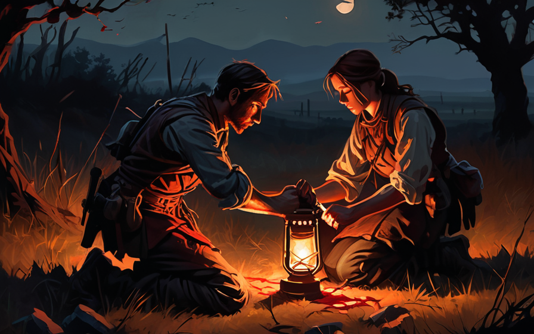
Medycyna — między raną a śmiercią często stoi tylko czysty bandaż i pewna ręka.
Spostrzegawczość WIS
Aktywne wypatrywanie ukrytych rzeczy: pułapek, sekretnych drzwi, zaczajonej osoby. Zwykłe „rozglądam się" nie wymaga rzutu — Spostrzegawczość budzi się, gdy szukasz czegoś konkretnego.
„Przeszukuję podłogę pod kątem pułapek." Ukryty mechanizm to PT 14.
Medycyna WIS
Opatrywanie ran, tamowanie krwotoków, stabilizowanie konających. Udany test zatrzymuje krwotok bez magii.
„Bandażuję rozciętą rękę towarzysza." Krwotok przerywa test Medycyny PT 16.
Przetrwanie WIS
Radzenie sobie w dziczy: szukanie drogi, wody, schronienia, rozpalanie ognia w deszczu.
„Szukam suchego miejsca na obóz przed burzą." Sukces daje bezpieczny odpoczynek.
Wnikliwość WIS
Czytanie ludzi: wyczucie kłamstwa, ukrytych intencji, prawdziwych emocji za maską.
„Wpatruję się w kupca — czy mówi prawdę?" Przeciwstawny test z jego Oszustwem.
Tropienie WIS
Odczytywanie śladów: tropów, odcisków, złamanych gałązek, krwi na liściach.
„Klękam i badam ślady w błocie — ilu ich było?" Świeży trop to PT 12.
Teologia WIS
Wiedza o bóstwach, kultach, rytuałach i świętościach. Bywa kluczem do zdjęcia klątwy.
„Rozpoznaję symbol nad ołtarzem — czyj to kult?"
Wiedza o naturze WIS
Znajomość zwierząt, roślin, ziół i bestii — co jest jadalne, co trujące, a co śmiertelnie groźne.
„Czy te jagody można jeść?" Sukces oszczędza ci nocy spędzonej nad rynsztokiem.
Wyczucie magii WIS
Przeczucie obecności czarów i splamionych miejsc — mrowienie karku tam, gdzie wisi zaklęcie.
„Czy w tej komnacie wisi jakaś magia?"
InteligencjaINT · wiedza, rozumowanie, rzemiosło
Wiedza INT
Ogólna erudycja o historii, rodach, miejscach i wydarzeniach. Przypomnienie sobie istotnego faktu w porę.
„Czy słyszałem kiedyś o tym herbie?" Mroczna wiedza to PT 16.
Arkana INT
Wiedza o magii, czarach, runach i splocie tajemnych sił. Rozszyfrowanie magicznej inskrypcji albo natury klątwy.
„Odczytuję runy na zwoju."
Dochodzenie INT
Logiczne łączenie poszlak: wnioskowanie z dowodów, dostrzeganie sprzeczności, rekonstrukcja zdarzeń.
„Składam fakty: kto był tu przed nami i po co?"
Alchemia INT
Warzenie mikstur, identyfikacja eliksirów i trucizn, mieszanie składników w użyteczne specyfiki.
„Próbuję sporządzić miksturę leczniczą z ziół."
Rzemiosło INT
Wytwarzanie i naprawa przedmiotów — od grotów po proste mechanizmy. Wsparcie dla kowala i majsterkowicza.
„Klecę z desek i gwoździ prowizoryczną drabinę."
Języki obce INT
Rozumienie i mówienie w obcych mowach, odczytywanie cudzoziemskich pism.
„Czy rozumiem, co krzyczą ci najemnicy?"
Żeglarstwo INT
Prowadzenie łodzi i statku: żagle, ster, nawigacja, czytanie pogody i prądów.
„Staram się utrzymać kurs mimo sztormu."
CharyzmaCHA · wpływ, urok, panowanie nad rozmową
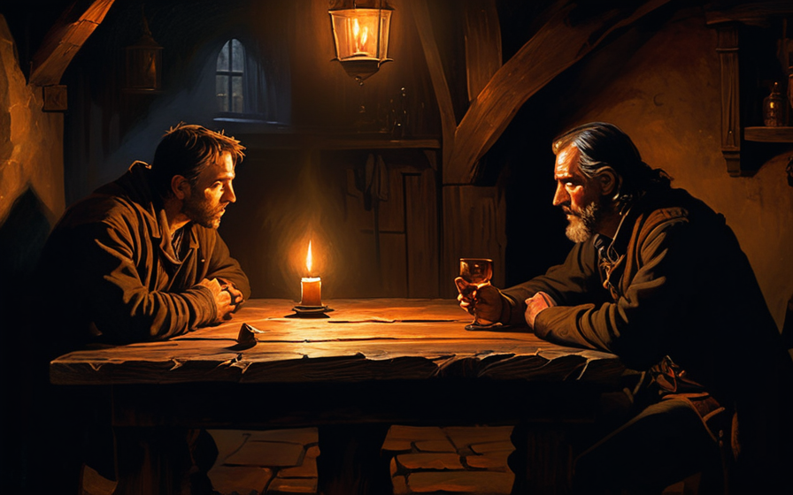
Perswazja — czasem najtrudniejszy zamek otwiera się na słowo, nie na wytrych.
Perswazja CHA
Przekonywanie szczerą rozmową, logiką i ciepłem. Skłonienie kogoś, by zrobił to, czego chcesz, bez gróźb.
„Tłumaczę strażnikowi spokojnie, że pomoc leży w jego interesie." PT 12 wobec nieufnego, lecz rozsądnego rozmówcy.
Oszustwo CHA
Kłamanie z przekonaniem, blef, podszywanie się — gdy AKTYWNIE mijasz się z prawdą w rozmowie.
„Wmawiam mu, że przysłał mnie sam burmistrz." Przeciwstawne z Wnikliwością celu.
Zastraszanie CHA
Wymuszanie groźbą, postawą lub przewagą. Skuteczne zwłaszcza, gdy masz w garści realny atut.
„Z nożem przy gardle żądam, by się poddał." Przewaga obniża próg.
Czar osobisty CHA
Zjednywanie sympatii i robienie dobrego wrażenia — pierwsze wrażenie, które otwiera drzwi.
„Staram się oczarować szynkarkę żartem."
Targowanie CHA
Negocjowanie cen u kupca. Udany test daje jednorazową zniżkę; krytyczna porażka obraża handlarza (rozdział VIII).
„Za drogo — opuść trochę, a wezmę dwa." Przeciwstawny test z kupcem.
Gra w kości CHA
Hazard przy stole: kości, karty, zakłady. Można grać uczciwie albo próbować szczęścia na granicy oszustwa.
„Stawiam dziesięć złotych na następny rzut." PT 12 wśród amatorów (rozdział VIII).
Plotkowanie CHA
Wyciąganie informacji w karczmie, na rynku, przy kuflu. Sztuka słuchania i rozwiązywania języków.
„Stawiam kolejkę i wypytuję o ostatnie zniknięcia."
Przekupstwo CHA
Wręczenie łapówki tak, by została przyjęta — i nie obróciła się przeciw tobie.
„Wsuwam strażnikowi monetę i mrugam porozumiewawczo."
Przebranie CHA
Zmiana wyglądu i zachowania, by uchodzić za kogoś innego — sługę, kupca, strażnika.
„Wkładam pelerynę straży i udaję wartownika."
Przesłuchanie CHA
Wydobywanie prawdy z opornego jeńca naciskiem, groźbą lub przebiegłością.
„Pochylam się nad związanym i pytam ostatni raz."
KondycjaCON · wytrzymałość ciała
Wytrzymałość CON
Opór ciała wobec wysiłku, trucizn, chorób, zimna i głodu. Test Wytrzymałości decyduje, czy zniesiesz to, co innych powala — forsowny marsz, dawkę jadu, mroźną noc bez ognia.
„Zaciskam zęby i idę dalej mimo wyczerpania." Porażka dokłada poziom wyczerpania (rozdział VI).
Rozdział czwarty
IV · MechanikaWalka
Gdy słowa się kończą, a kość mówi dalej
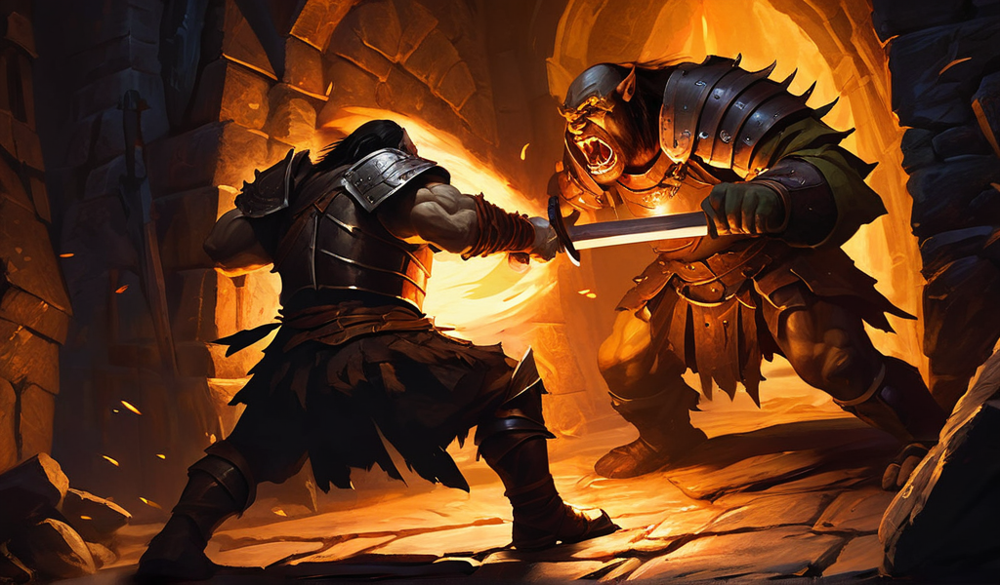
W walce kość pada częściej i szybciej — lecz reguła pod spodem się nie zmienia.
Walka to seria szybkich tur. Każda strona działa po kolei, a w swojej turze
atakuje, rzuca czar, zmienia pozycję albo robi coś sprytnego. Trafienie i obrażenia mają tu własne,
dokładniejsze reguły niż zwykły test umiejętności — ale wciąż opierają się na tej samej kości k20.
Przebieg rundy — krok po kroku
Każde starcie przechodzi przez te same etapy. Zanim rozłożymy je na czynniki, oto cała pętla
walki w pięciu krokach:
1 · Inicjatywa
Na samym początku każdy rzuca k20 + ZRĘ. Ustala to kolejność tur na całe starcie.
2 · Twoja tura
W swojej turze robisz jedną rzecz: atakujesz, rzucasz czar, zmieniasz strefę albo działasz sprytnie. Potem kolej następnego.
3 · Trafienie
Atak to rzut przeciw unikowi celu. Pancerz nie chroni przed trafieniem — chroni przed raną.
4 · Obrażenia
Po trafieniu liczysz kości broni + cechę, odejmujesz pancerz, dorzucasz premię z marginesu. Wynik schodzi z HP.
5 · Koniec walki
Trwa, aż jedna strona padnie albo ucieknie. HP wroga do zera = pokonany; twoje do zera = rzuty na śmierć (rozdział V).
Inicjatywa
Na początku starcia każdy rzuca inicjatywęInicjatywak20
+ modyfikator Zręczności, raz na starcie. Wyższy wynik działa pierwszy; przy remisie pierwszeństwo
ma bohater.: k20 + modyfikator Zręczności. Kto wyrzuci więcej, działa
pierwszy; przy remisie pierwszeństwo ma bohater. Zaskoczenie wroga (udane skradanie przed walką)
potrafi odwrócić tę kolejność na twoją korzyść.
Trafienie i unik
Atak to jeden rzut przeciwstawny: twój atak (k20 + modyfikator + ranga +
biegłość) kontra unik obrońcyUnikk20
+ modyfikator Zręczności obrońcy. Trafiasz, gdy twój atak przebije unik. Przy remisie wygrywa
obrońca. (k20 + jego Zręczność). Trafiasz, gdy twój wynik przebije unik —
przy remisie wygrywa obrońca. Dwie liczby na kości rządzą jednak ponad wszystkim:
Naturalna 20Automatyczne trafienie. Nie da się go uniknąć, podwaja obrażenia
i ignoruje pancerz. Cios z zaskoczenia podwaja niezależnie — razem nawet ×4.
Naturalna 1Automatyczne pudło. Choćby wróg był tuż przed tobą — ostrze tnie powietrze.
To ważna zmiana wobec starszych systemów: pancerz nie jest progiem trafienia.
O tym, czy trafiasz, decyduje wyłącznie unik. Pancerz wkracza dopiero przy obrażeniach.
Pancerz i obrażenia
Gdy już trafisz, liczysz obrażenia: kości broni + modyfikator cechy. Potem
wchodzą dwie reguły, które czynią walkę dotkliwą i przewidywalną zarazem:
Od trafienia do rany
Reguła
Jak działa
Pancerz = redukcjaPancerz jako redukcjaPancerz
odejmuje obrażenia, nie blokuje trafień. Wartość = AC − 10. Zawsze przechodzi min. 1
obrażenie. Naturalna 20 ignoruje pancerz.
Pancerz odejmuje od obrażeń wartość (AC − 10). Zawsze przechodzi co
najmniej 1 punkt. Naturalna 20 pomija pancerz w całości.
Margines = obrażeniaPremia z marginesuZa
każde pełne 5 punktów, o które atak przebił obronę celu, +1 obrażenie. Czysty
cios boli bardziej niż ledwie udany.
Za każde pełne 5 punktów, o które twój atak przebił obronę celu,
dorzucasz +1 obrażenie. Im pewniejszy cios, tym głębsza rana.
Ta sama maszyneria działa symetrycznie — dokładnie tak samo, gdy to wróg uderza w
ciebie. Żadnych podwójnych testów obrony: jeden rzut rozstrzyga trafienie, a reszta to już
odliczanie krwi.
Zwarcie i dystans
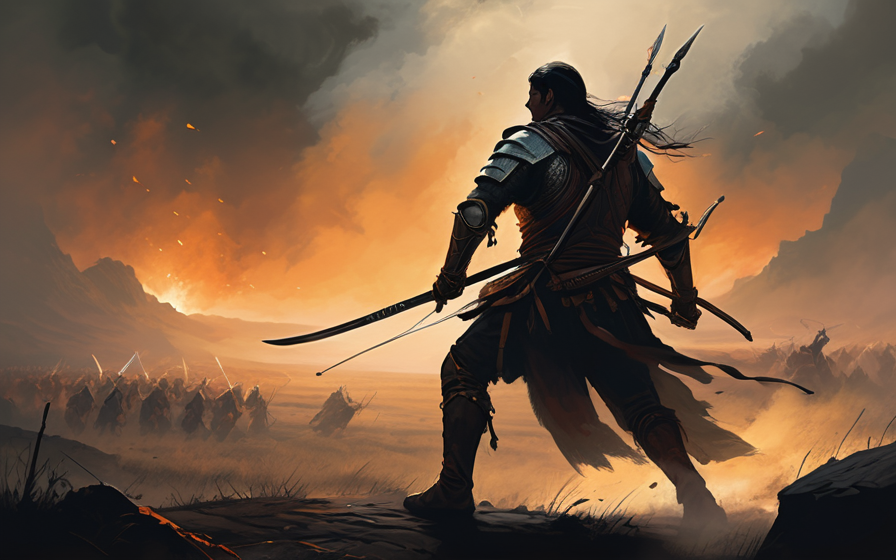
Łucznik trzyma dystans, wojownik musi go pokonać. Strefa decyduje, kto i kiedy może uderzyć.
Pole walki dzieli się na dwie strefyStrefy walkiKażdy
walczący jest w zwarciu albo na dystansie. Wojownik zaczyna w zwarciu, uczony na
dystansie. Broń biała sięga tylko własnej strefy.: zwarcie (twarzą
w twarz, na długość ostrza) i dystans (kilka–kilkanaście kroków dalej). Wojownik
zaczyna w zwarciu, uczony na dystansie, a wrogowie — wedle swojej natury: łucznik, kusznik czy mag
trzyma dystans, zbir czy wilk rwie do zwarcia.
Reguła jest prosta i twarda: broń biała sięga tylko własnej strefy. Jeśli cel
jest w innej strefie niż ty, twój cios mieczem zostaje zablokowany bez stracenia tury —
gra powie ci wprost, że musisz się najpierw zbliżyć. Łuk, proca i czar nie znają tego ograniczenia
— rażą w każdej strefie. Stąd dwie kluczowe akcje pozycji:
Zbliż się / Cofnij się
Akcja zmiany strefy. Poświęcasz na nią turę (nie atakujesz), za to przechodzisz do zwarcia z wrogiem — albo wycofujesz się na dystans, by uciec spod topora.
„Doskakuję do łucznika, zanim zdąży napiąć cięciwę."
Doskok wroga
Wróg z bronią białą, który jest w złej strefie, nie atakuje na ślepo — poświęca całą turę na zbliżenie się do ciebie. To twoja okazja, by go ostrzelać, zanim dopadnie.
Zbir rzuca się przez izbę — masz jedną turę przewagi.
Mikstura w walce
W swojej turze możesz sięgnąć po leczniczą miksturę z plecaka (przycisk Akcja → Mikstura). Wypicie poświęca turę — leczysz się, ale w tej rundzie nie atakujesz, a wróg zaraz uderzy. To realna decyzja: pić teraz czy spróbować dobić go ciosem.
Spadasz do 3 punktów życia — wypijasz miksturę zamiast atakować i przeżywasz kolejny cios.
Przykład · Cios wojownika
Wojownik (Siła 16, modyfikator +3, ranga Ataku 2) tnie orka mieczem. Orkowa
obrona to 12, a jego pancerz — skórznia o AC 13.
Atak broniącecha:
SiłaSiła (STR)Napędza
atak i obrażenia bronią siłową.Siła
Gdyby na kości padła naturalna 20,
obrażenia najpierw uległyby podwojeniu, a pancerz w ogóle by nie zadziałał — cios przeszedłby
jak przez papier.
Gdy to wróg uderza w ciebie
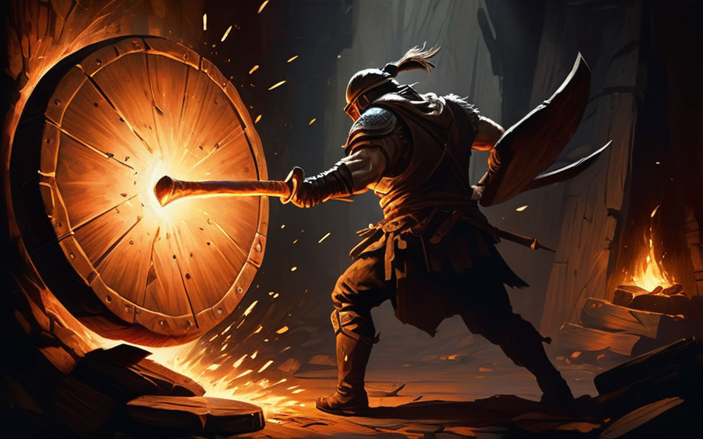
Ta sama matematyka, druga strona ostrza — twój pancerz i tarcza ścinają cudze ciosy.
Cała powyższa maszyneria działa symetrycznie. Gdy wróg atakuje, to on
rzuca k20 + swój modyfikator przeciw twojemu unikowi, a twój pancerz redukuje obrażenia
dokładnie tak samo. Żadnych osobnych zasad dla potworów — jeden model dla wszystkich.
Przykład · Cios orka w bohatera
Teraz ork kontruje. Twój unik to 14, a nosisz kolczugę o AC 14 (redukcja 4).
Gdybyś zdążył przed ciosem podnieść tarczę (udany
Blok Tarczą) albo wycofać się na dystans, część tych obrażeń w ogóle by do
ciebie nie dotarła. W walce liczy się nie tylko to, jak mocno bijesz — ale i ile zdołasz znieść.
Rozdział piąty
V · MechanikaRany i śmierć
Cena, którą płaci ciało
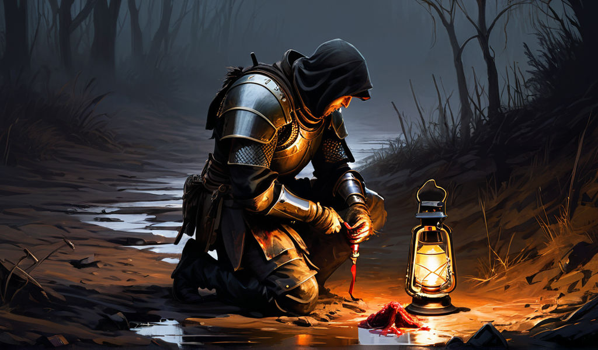
W tym świecie rany bolą jeszcze długo po tym, jak ucichnie szczęk stali.
Twoje punkty życiaPunkty życia (HP)HP
bazowe archetypu (Wojownik 10 / Łotrzyk 8 / Uczony 6) + modyfikator Kondycji × poziom.
to nie tylko licznik. Im niżej spadają, tym ciężej walczyć — ból i wstrząs odbierają pewność dłoni,
a każda kolejna rana ciąży na rzutach.
Stopnie ran
W miarę jak topnieje twoje HP, popadasz w coraz gorszy stan, a Mistrz Gry dolicza karę do twoich
testów. Ta sama drabina dotyczy wrogów — ranny przeciwnik też walczy słabiej.
Drabina ran wedle pozostałego HP
Pozostałe HP
Stan
Kara
powyżej 75%
Zdrowy
0
75–50%
Ranny
−1
50–25%
Ciężko ranny
−2
25–10%
Poważnie ranny
−4
poniżej 10%
Na skraju śmierci
−4
Niektóre rany krwawią dalej, nieproszone. KrwotokKrwotokNarastające
obrażenia co turę (1k4, rosnące co 3 nieleczone tury). Zdejmuje go udany test Medycyny (PT 16) albo
magia. z głębokiej rany odbiera HP co turę i z czasem narasta — nieopatrzony potrafi
sam zaprowadzić cię nad krawędź. Bandaż (test Medycyny) albo czar leczenia przerywa to w porę.
Gdy HP spada do zera
Zero punktów życia to nie automatyczna śmierć. To moment, w którym padasz i zaczynają
się rzuty na śmierć. Obowiązuje przy tym żelazna, niepodważalna zasada tego świata:
Bohater nie ginie od samej narracji
Dopóki masz choć 1 punkt życia — żyjesz, kropka. Śmierci nie wywoła żaden opis, nastrój ani
dramatyczna chwila. Przesądza ją wyłącznie mechanika: spadek HP do zera w walce albo seria
nieudanych rzutów na śmierć. To gwarancja, że nie zginiesz „dla efektu".
Rzuty na śmierć
Leżąc na ziemi z zerem HP, walczysz o życie czystą kością k20 (bez modyfikatorów), a próg rośnie
z każdym kolejnym omdleniem w tym samym starciu:
Wspinająca się drabina rzutów na śmierć
Który raz
Próg
Pierwszy
10
Drugi
13
Trzeci
16
Czwarty i dalej
19
Każda porażka to jedna kreska (naturalna 1 — dwie). Trzy porażki
i bohater umiera; kampania dobiega końca, a postaci przypada epitafium. Naturalna 20 ratuje
cię z miejsca, stawiając z powrotem na nogi. Co ważne — drabina progów jest per starcie:
każde kolejne omdlenie w tej samej walce podnosi poprzeczkę, więc bohater wielokrotnie wracający do
przytomności jest coraz bliżej śmierci.
Przykład · Walka o ostatni oddech
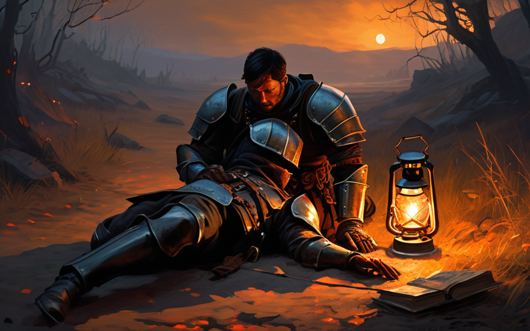
Cios maczugi sprowadza twoje HP do zera. Padasz w błoto. To pierwsze omdlenie w
tym starciu, więc próg rzutu na śmierć wynosi 10.
Rzut na śmierćczysta k20, bez modyfikatorów
Rzut k207
Wynik 7< Próg 101. porażka
PorażkaPierwsza kreska z trzech.
Świat ciemnieje, lecz wciąż walczysz. Jeszcze dwie takie i koniec.
Gdyby towarzysz zdążył dobiec i zdać test
Medycyny albo rzucić czar leczenia, postawiłby cię z powrotem na nogi i
przerwał odliczanie. W tym świecie różnica między bohaterem a kolejnym imieniem na grobie to
często jedna pewna ręka w odpowiedniej chwili.
Śmierć i wskrzeszenie
Śmierć nie wymazuje twojego dorobku — złoto i doświadczenie pozostają w kronice; po prostu
zamyka opowieść postaci, a Mistrz Gry układa jej epitafium. Niektóre światy oferują jednak
wskrzeszenieWskrzeszenieOpcjonalna
zasada (domyślnie wyłączona). Przywraca bohatera z połową maksymalnego HP — za cenę utraty części
PD, złota albo przedmiotu, zależnie od ustawień świata. — opcjonalną łaskę, domyślnie
wyłączoną. Tam, gdzie jest dostępna, przywraca bohatera z połową maksymalnego HP, lecz zawsze za
cenę: utratą części doświadczenia, garści złota albo cennego przedmiotu. Śmierci w tym świecie nie
da się cofnąć za darmo.
Rozdział szósty
VI · MechanikaStany i kondycje
Ogień, trucizna, strach i szał
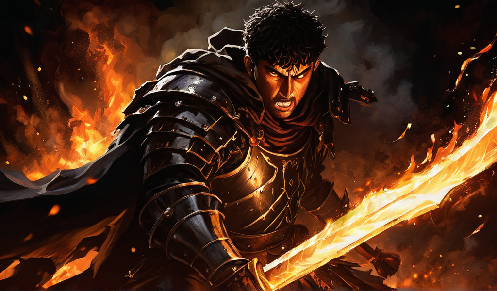
Niektóre stany cię niszczą. Inne — czynią groźnym aż do chwili, gdy cię zgubią.
Walka i magia nakładają na ciała stany — od płonącego
rękawa po ślepą furię. Każdy stan ma swoją mechanikę: ile odbiera, jak długo trwa i co go zdejmuje.
Część rozstrzyga się sama, część czeka, aż coś ją przerwie.
Trzy rodzaje stanów
Rany w czasieOdbierają HP co turę. Krwawienie, Płonięcie, Podpalenie, Krwotok. Tykają,
dopóki nie miną albo ich nie przerwiesz (woda, bandaż, czar).
Utrata kontroliOdbierają wybór. Panika zmusza do ucieczki, Berserk — do ataku na
najbliższego (nawet sojusznika), Dezorientacja losuje twój ruch kością k4.
WzmocnieniaDziałają na twoją korzyść. Furia, Przyśpieszenie, Błogosławieństwo,
Natchnienie, Ukrycie — potęga, która zwykle ma swoją cenę.
Wiele wzmocnień to miecz obosieczny. FuriaFuria+2
Siły i +3 obrażeń w zwarciu, odporność na spowolnienie — lecz po wygaśnięciu bohater pada z
wyczerpania, a ogłuszenie ją przerywa. daje wojownikowi moc, po której przychodzi
wyczerpanie; PrzyśpieszeniePrzyśpieszenie+2
Zręczności i dodatkowa akcja ruchu przez 3 tury — po czym dopada cię wyczerpanie.
dorzuca akcję, lecz kończy się tym samym. Potęga w tym świecie rzadko bywa darmowa.
Katalog stanów
Pełny katalog liczy ponad dwadzieścia stanów. Oto najważniejsze, pogrupowane wedle trzech
rodzajów. Przy każdym: co robi i co go zdejmuje. Pamiętaj — wszystkie liczby liczy silnik; ty
słyszysz w narracji tylko skutek.
Rany w czasie · tykają co turę
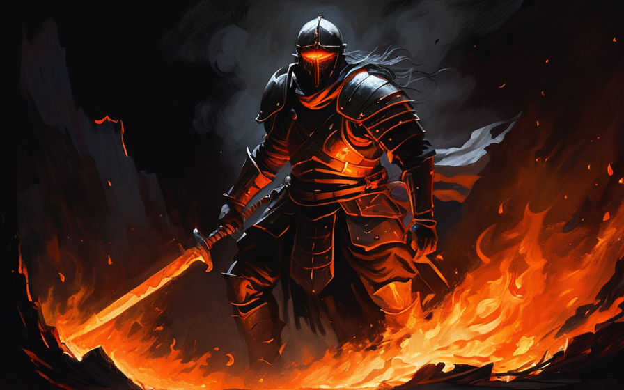
Podpalenie — ogień nie pyta o pancerz; trzeba go ugasić, zanim strawi wszystko.
Podpalenie 2k6 / turę
Ciało stanęło w ogniu: 2k6 obrażeń co turę oraz −2 do Siły i Zręczności. Najgroźniejsza z ran w czasie.
Zdejmuje: udany rzut Zręczności (PT 12), skok do wody, czar.
Krwotok 1k4, rośnie
Głęboka, krwawiąca rana: 1k4 co turę, narastająco co kilka nieopatrzonych tur. Nieleczony sam zaprowadzi nad krawędź.
Zdejmuje: test Medycyny (PT 16) albo magia leczenia.
Trucizna co turę
Jad sączy się w żyłach, odbierając HP co turę przez czas trwania. Czyni rany trwalszymi niż jeden cios.
Zdejmuje: czas, antidotum, silny rzut Kondycji.
Utrata kontroli · odbierają wybór
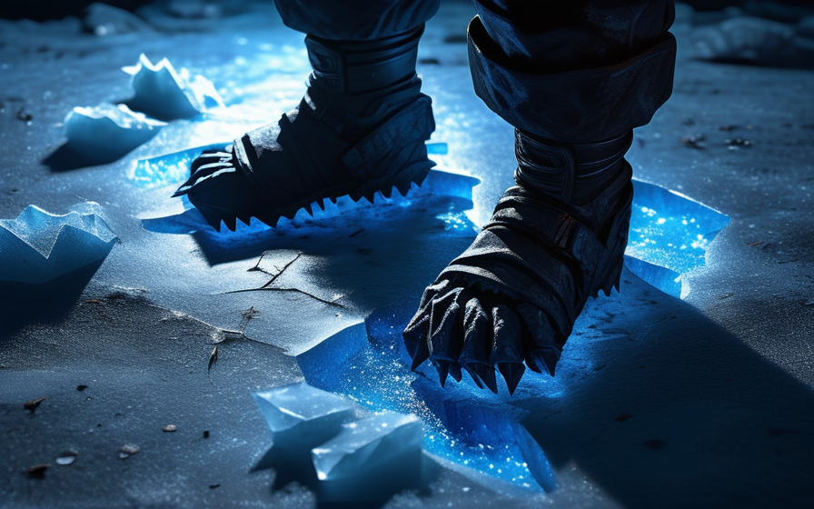
Zamrożenie i sen wyłączają wroga równie skutecznie jak ostrze — czasem skuteczniej.
Ogłuszenie
Zmysły gasną na chwilę — tracisz najbliższą turę. Krótkie, lecz w walce bezcenne.
Zdejmuje: mija samo po 1 turze.
Panika
Strach przejmuje stery: silnik zmusza cię (lub wroga) do ucieczki z walki, zamiast ataku.
Zdejmuje: rzut Mądrości (PT 14).
Berserk
Ślepy szał: cel atakuje najbliższego, choćby sojusznika; +3 atak i obrażenia, ale −3 do obrony. W odróżnieniu od Furii — bez panowania nad sobą.
Zdejmuje: rzut Mądrości; brak wrogów w pobliżu.
Zamęt
Chaos w głowie: na początku tury silnik losuje (k4) zachowanie — stanie, uderzy przypadkowo, ucieknie albo zadziała normalnie.
Zdejmuje: upływ czasu trwania.
Sen
Magiczny sen wyłącza wroga całkowicie, póki czegoś nie zbudzi (cios, hałas). Potężna kontrola uczonego.
Zdejmuje: obrażenia, koniec działania czaru.
Zauroczenie
Zniewolony umysł: zauroczony nie atakuje tego, kto rzucił czar, i traci wobec niego czujność. Nakłada je zaklęcie Zauroczenie maga (rozdział VII).
Zdejmuje: rzut Mądrości, obrażenia od rzucającego, koniec działania czaru.
Przerażenie
Pierwotny strach: cel wpada w panikę i ucieka z walki zamiast działać — pokrewne Panice, lecz zsyłane czarem Fala Strachu na wielu wrogów naraz.
Zdejmuje: rzut Mądrości (PT 14), upływ czasu trwania.
Spowolnienie / Zamrożenie
Mróz krępuje ruchy (spowolnienie) lub całkiem unieruchamia (zamrożenie), odbierając akcje i pogarszając obronę.
Zdejmuje: upływ czasu, ciepło, ogień.
Klątwy i osłabienia
Klątwa
Mroczne fatum: −2 do wszystkich testów, a raz na scenę silnik przerabia twój udany rzut na gorszy („zły omen").
Zdejmuje: rytuał (Teologia / Arkana), święte miejsce.
Wyczerpanie
Stan stackowalny: każdy poziom to kara do cech; drugi poziom oznacza omdlenie. Cena marszu bez odpoczynku i wygasłych szałów.
Zdejmuje: odpoczynek (rozdział IX).
Wzmocnienia · potęga za cenę
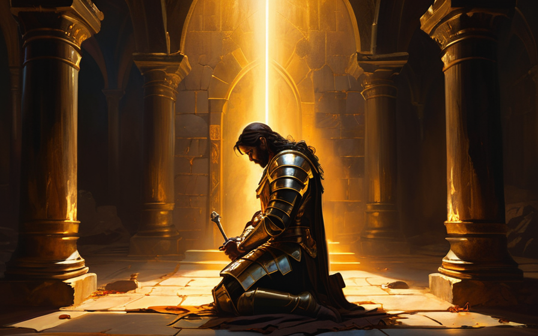
Błogosławieństwo — raz na scenę cudem wyrywa bohatera spod kosy.
Furia +2 SIŁ / +3 obr.
Świadomy szał wojownika: +2 Siły, +3 obrażeń w zwarciu, odporność na spowolnienie. Lecz po wygaśnięciu pada z wyczerpania, a ogłuszenie ją przerywa.
Cena: wyczerpanie po zakończeniu.
Przyśpieszenie +2 ZRĘ
Magiczny pośpiech: +2 Zręczności i dodatkowa akcja ruchu przez 3 tury. Po wygaśnięciu — wyczerpanie.
Cena: wyczerpanie po wygaśnięciu.
Błogosławieństwo +2 obrona
Opieka bóstwa: +2 do testów obronnych, a raz na scenę, gdy cios miałby cię powalić, silnik rzuca Kondycję i przy sukcesie zostawia cię na 1 HP.
Trwa do końca sceny.
Natchnienie
Pewność ducha po czyjejś zachęcie czy modlitwie: +2 do Charyzmy i Mądrości oraz jeden przerzut nieudanego testu.
Przerzutem sterujesz sam, raz.
Ukrycie
Wtopiłeś się w cień: wrogowie nie mogą cię atakować, póki cię nie wykryją (ich rzut Mądrości), a twój pierwszy cios z ukrycia zadaje +2k6 obrażeń zasadzki.
Kończy je: twój atak albo wykrycie przez wroga.
Rozdział siódmy
VII · UczonyMagia uczonego
Moc, która liczy się w manie i ryzyku
Każde zaklęcie to transakcja: mana w zamian za moc, a czasem życie za błąd.
Tylko uczony włada magią — i tylko on dźwiga jej ciężar.
Tam, gdzie wojownik ufa stali, uczony ufa wiedzy zapisanej w grymuarach: trzydziestu czterech zaklęć,
które potrafią spopielić wroga, zasklepić ranę, uśpić świadomość albo wyssać życie. Ten rozdział
opisuje je wszystkie, co do jednego — z kosztem, kością i przykładem rzucenia.
Mana — paliwo czarów
Twój zapas manyMana=
8 + modyfikator INT × poziom. Każdy czar pobiera koszt z góry. Odnawia się w pełni po długim
odpoczynku. to 8 + modyfikator Inteligencji × poziom. Uczony na 3.
poziomie z Inteligencją 16 (mod +3) ma więc 8 + 3 × 3 = 17 many. Każde zaklęcie
pobiera swój koszt z góry — bez wystarczającej many po prostu go nie rzucisz. Mana odnawia się do
pełna po długim odpoczynku (rozdział IX); krótki odpoczynek jej nie przywraca, więc każdy
czar w lochu trzeba liczyć.
Jak rzucasz czar
Czary dzielą się na cztery rodzaje, a każdy rozstrzyga się trochę inaczej. Wspólny mianownik:
płacisz manę, potem rzucasz — i wszystkie używają twojej Inteligencji jako cechy.
Atakującyk20 + INT przeciw unikowi wroga, zupełnie jak cios bronią. Trafienie zadaje
obrażenia z kości czaru. Nat 20 podwaja, nat 1 to miscast.
LeczniczyBez rzutu na trafienie — po prostu rzucasz kość leczenia i odzyskujesz tyle HP.
ObronnyNakłada na ciebie ochronę: dodatkowy pancerz albo pulę, która pochłonie najbliższe ciosy.
KontrolującyRzut przeciw odporności celu (jego Mądrość). Sukces nakłada stan (sen, klątwa, trucizna). Gdy cel się oprze, część many wraca.
Przykład · Ognisty Pocisk
Uczony (Inteligencja 16, mod +3) ciska Ognisty Pocisk w zbira. Płaci 2 many,
a obrona zbira to 12.
Czar atakującycecha:
InteligencjaInteligencja (INT)Cecha
wszystkich czarów uczonego — i celności, i many.Inteligencja
Rzut k2014
Modyfikator Inteligencji (16)+3
Atak 17vs obrona 12koszt 2 many
TrafienieOgnisty Pocisk 1k8 = 6 obrażeń.
Płomień może dodatkowo podpalić cel. Zostaje ci 15 many.
Księga czarów
Wszystkie trzydzieści siedem zaklęć, wedle pięciu tierów mocy. Każdy wpis podaje tier, koszt many,
kość i działanie. Uczony zaczyna, znając kilka czarów 1. tieru; reszty uczy się z czasem.
Nie każdy czar celuje we wroga. Część zaklęć wspiera sojusznika albo całą drużynę
(np. Leczenie Grupowe, Tarcza Bóstwa) — w starciu wieloosobowym lub przy
przyzwańcuPrzyzwaniecIstota wezwana czarem (chowaniec, żywiołak, nieumarły sługa, cienisty klon). Dołącza do walki jako twój towarzysz, działa w kolejce inicjatywy i atakuje w swojej turze — póki nie zginie lub nie wygaśnie.
wybierasz, na kogo pada. Osobna rodzina czarów — przyzwania — nie zadaje obrażeń wprost,
lecz stawia u twego boku towarzysza, który bije wrogów w swojej turze (kolejka inicjatywy z rozdziału IV).
Jeszcze inna rodzina to czary
reakcjiCzar reakcjiZaklęcie obronne rzucasz z wyprzedzeniem — zakłada na ciebie stan, który sam odpala się przy następnym ciosie wroga, zanim policzymy obrażenia. Lustrzane Odbicie poświęca iluzoryczną kopię, Migotanie daje szansę, że cios przejdzie przez pustkę, a Kula Niewrażliwości zeruje obrażenia przez kilka rund. Liczy się tylko jeden taki czar na rundę — ma pierwszeństwo przed Unikiem i Blokiem..
Rzucasz je zawczasu; gdy wróg trafia, czar reaguje za ciebie — kopia przyjmuje cios, migoczesz poza zasięg
albo kula odbija całe obrażenia. To głębsza warstwa obrony maga niż bierna tarcza.
Tier 1 · podstawy sztuki
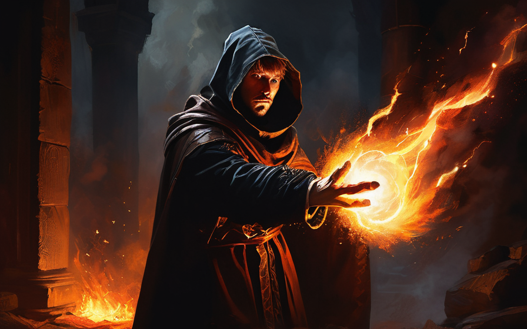
Ognisty Pocisk — pierwszy czar, którego uczy się niemal każdy adept.
Ognisty Pocisk T12 many1k8
Skupiona kula ognia ciśnięta w cel; przy trafieniu może go podpalić, dokładając obrażenia w kolejnych turach. Niezawodny czar otwierający.
Atakujący — k20 + INT przeciw unikowi.
Błysk Magiczny T12 many2k6
Strumień czystej magicznej energii — bez żywiołu, więc trudny do uodpornienia. Najwyższe obrażenia spośród czarów 1. tieru.
Atakujący, sięga celu w każdej strefie.
Mroźna Strzała T12 many1k8
Lodowaty bełt rani i może spowolnić trafionego, odbierając mu rozpęd w następnej turze.
Atakujący; trafienie bywa też spowolnieniem.
Plusk Kwasu T11 many1k6
Fala parzącej cieczy żre cel i jego zbroję. Tani czar na pobliskiego wroga, gdy oszczędzasz manę.
Atakujący, tylko cel w pobliżu.
Mroźny Uchwyt T12 manystan
Przenikliwy mróz krępuje ruchy celu, nakładając spowolnienie na dwie tury. Kontrola bez obrażeń.
Kontrolujący — rzut przeciw Mądrości celu.
Leczniczy Dotyk T11 many1k6
Strumień kojącej energii zamyka rany rzucającego. Tani, szybki opatrunek w środku walki.
Leczniczy — bez rzutu, po prostu odzyskujesz HP.
Rana Uleczona T12 many2k6
Mocniejsze leczenie — dwie kości HP za dwie many. Podstawowe zaklęcie ratujące życie.
Leczniczy, bez rzutu na trafienie.
Tarcza Arkan T12 manyobrona
Migocząca tarcza zwiększa twój pancerz na czas trwania, ścinając obrażenia każdego ciosu.
Obronny — nakładasz na siebie.
Żelazna Straż T12 manyobrona
Niewidoczne pole pochłania w całości najbliższe trafienie. Idealne tuż przed spodziewanym ciosem.
Obronny — absorbuje jeden cios.
Magiczne Światło T10 manynarracja
Unosząca się kula światła rozjaśnia ciemność jak pochodnia. Darmowy, lecz bez wartości bojowej.
Narracyjny — bez kości i bez kosztu.
Wykrycie Magii T11 manynarracja
Trzecie oko ujawnia aurę magiczną wokół przedmiotów i istot — co jest zaklęte, co przeklęte.
Narracyjny — odsłania to, co ukryte przed wzrokiem.
Tier 2 · żywioły i kontrola
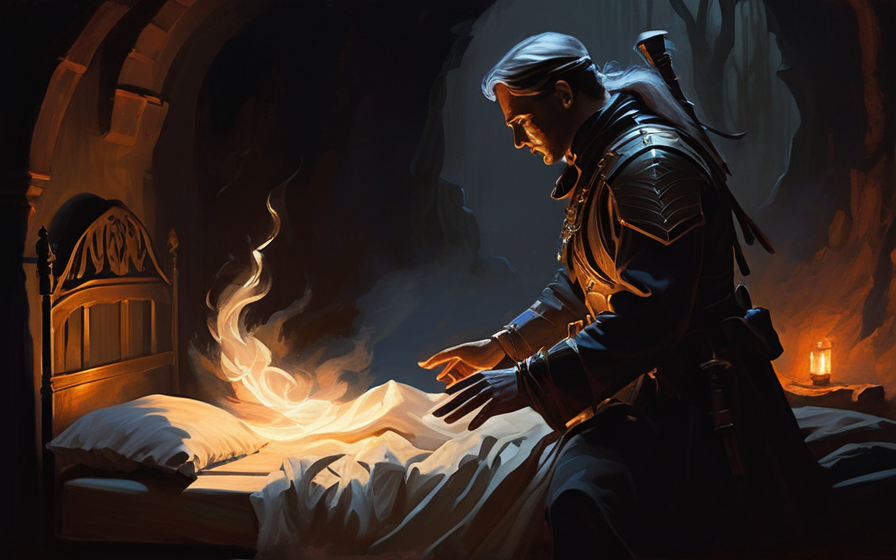
Sen — czasem najgroźniejszy cios to taki, który w ogóle nie krwawi.
Piorunowy Grot T23 many2k6
Naładowany elektrycznie pocisk razi cel energią. Solidne obrażenia na średnim koszcie.
Atakujący, sięga w każdej strefie.
Lodowa Lanca T23 many2k8
Ciężka kolumna lodu przeszywa cel impetem tarana. Przy krytyku zamraża trafionego.
Atakujący; nat 20 dorzuca zamrożenie.
Pałająca Ścieżka T24 many1k6
Łuk ognia trafia wszystkich wrogów naraz. Pierwszy czar obszarowy uczonego.
Atakujący obszarowy — kość obrażeń na każdego wroga.
Sen T23 manystan
Wpędza wroga w magiczny sen, wyłączając go ze starcia, póki czegoś nie zbudzi. Potężna kontrola.
Kontrolujący — rzut przeciw Mądrości celu.
Oślepienie T23 manystan
Fala oślepiającego światła odbiera celowi wzrok na dwie tury — jego ataki stają się bezładne.
Kontrolujący — przeciw Mądrości celu.
Klątwa T22 manystan
Mroczna klątwa osłabia ducha celu: −2 do wszystkich jego testów i zły omen wiszący nad nim przez trzy tury.
Kontrolujący — przeciw Mądrości celu.
Trujący Dotyk T22 many1k4
Magiczna trucizna na dłoni zatruwa wroga w zwarciu — rana tyka co turę przez trzy tury.
Kontrolujący w zwarciu; nakłada zatrucie.
Zbroja Maga T23 manyobrona
Warstwa zmaterializowanej energii pochłania nadchodzące obrażenia jak druga skóra — większa pula niż Żelazna Straż.
Obronny — pula absorpcji na siebie.
Zauroczenie T23 manystan
Mag zniewala umysł jednego wroga: zauroczony traci wrogość wobec rzucającego i przestaje go atakować. Pojedynek Intelektu maga przeciw Mądrości celu.
Kontrolujący — INT maga przeciw Mądrości celu.
Przywołaj Chowańca T23 manyprzyzwanie
Mag wzywa magicznego chowańca, który dołącza do walki jako towarzysz i bije najbliższego wroga w swojej turze. Pierwszy przyzwaniec uczonego.
Przyzwanie — chowaniec działa w kolejce inicjatywy obok ciebie.
Lustrzane Odbicie T23 manyreakcja
Mag tworzy trzy iluzoryczne kopie siebie. Każdy kolejny cios wroga trafia w obraz, nie w maga — kopia rozwiewa się, ty wychodzisz bez szwanku. Stan trzyma się, póki nie zużyjesz wszystkich kopii.
Wysysanie Życia — cudza krew staje się twoim zdrowiem.
Wysysanie Życia T33 many2k8
Wysysa siły witalne wroga w zwarciu i leczy rzucającego o część zadanych obrażeń. Cios i opatrunek w jednym.
Atakujący w zwarciu; leczy maga przy trafieniu.
Uderzenie Inferno T34 many3k6
Skupiony żar piekielnego ognia wybucha w jednym punkcie. Najwyższe obrażenia pojedynczego celu na tym tierze.
Atakujący — potężny cios w jeden cel.
Zamęt T33 manystan
Chaotyczne obrazy dezorientują cel: silnik losuje co turę jego działanie — stanie, zaatakuje przypadkowo albo ucieknie.
Kontrolujący — przeciw Mądrości celu.
Fala Strachu T34 manystan
Fala pierwotnego strachu obejmuje wszystkich wrogów na polu — przegrani wpadają w przerażenie i uciekają z walki. Każdy broni się osobno.
Kontrolujący obszarowy — INT maga przeciw Mądrości każdego wroga.
Leczenie Grupowe T34 many2k6
Fala kojącej energii leczy wszystkich żywych sojuszników naraz — ciebie, towarzyszy, przyzwańce. Filar drużynowego maga.
Leczniczy obszarowy — 2k6 HP każdemu sojusznikowi, bez rzutu.
Tarcza Bóstwa T33 manyobrona
Mag otacza wybranego sojusznika świętą tarczą pochłaniającą obrażenia. Pierwszy czar obronny rzucany na kogoś innego niż ty.
Obronny — pula absorpcji na sojusznika.
Przywołaj Żywiołaka T35 manyprzyzwanie
Mag wzywa żywiołaka — potężnego towarzysza bojowego, który razi wrogów we własnej turze. Mocniejszy i droższy od chowańca.
Przyzwanie — żywiołak walczy w kolejce inicjatywy.
Migotanie T34 manyreakcja
Mag migocze między płaszczyznami przez kilka rund. Każdy cios wroga ma połowiczną szansę przejść przez pustkę i całkiem chybić. Nie gwarancja jak Lustrzane Odbicie — zakład, który czasem zawodzi, ale chroni dłużej.
Reakcja — przez 3 rundy każde trafienie losuje 50% szansy na pełne pudło.
Tier 4 · mistrzostwo
Łańcuch Błyskawic T45 many2k6
Błyskawica skacze kolejno przez maksymalnie trzech wrogów, raniąc każdego. Pogromca grup.
Atakujący obszarowy — odbija się między celami.
Piorun Ogłuszenia T44 many1k6
Skondensowana kula energii rani i ogłusza cel, odbierając mu najbliższą turę. Kontrola z premią obrażeń.
Kontrolujący — przeciw Mądrości; ogłusza przy sukcesie.
Kamienna Skóra T44 manyobrona
Skóra twardnieje jak kamień, drastycznie zmniejszając obrażenia przez trzy tury. Najlepsza obrona uczonego.
Obronny — silna redukcja na siebie.
Ożywienie Zmarłych T45 manyprzyzwanie
Nekromanta podnosi szkielet do walki: bezduszny sługa atakuje wrogów, póki nie rozsypie się w proch. Mroczny towarzysz na całe starcie.
Przyzwanie — nieumarły sługa walczy w twojej drużynie.
Tier 5 · legenda
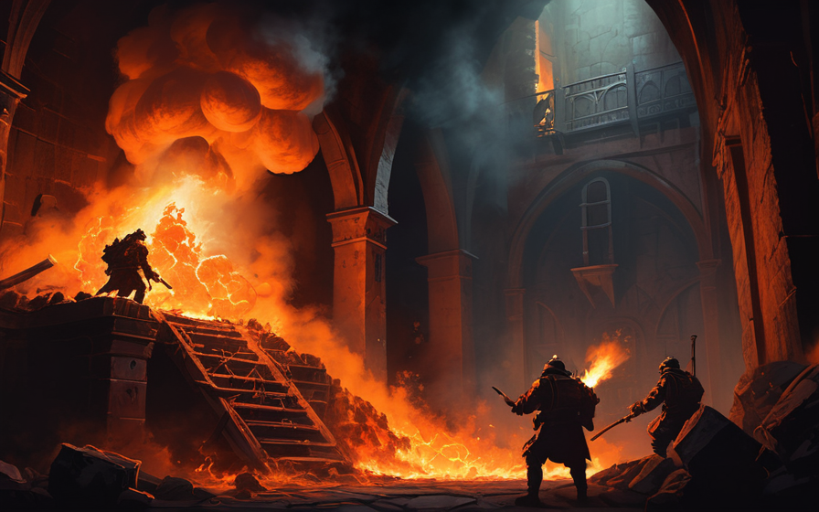
Kula Ognia — zaklęcie, o którym ostrzegają całe miasta.
Kula Ognia T56 many3k6
Ognista eksplozja niszczy wszystkich wrogów wokół punktu uderzenia. Najpotężniejszy czar zaczepny w księdze — i najdroższy. Jeden dobry rzut potrafi zakończyć całą walkę, lecz pochłania niemal całą manę niskopoziomowego maga.
Atakujący obszarowy — 3k6 każdemu wrogowi w zasięgu wybuchu.
Cień-Klon T56 manyprzyzwanie
Mag tworzy cienistą kopię siebie o stałym profilu bojowym, walczącą u jego boku. Najpotężniejszy przyzwaniec w księdze.
Przyzwanie — klon działa w kolejce inicjatywy obok ciebie.
Kula Niewrażliwości T56 manyreakcja
Mag otacza się kulą absolutnej nietykalności. Przez kilka rund żaden cios go nie dosięga — wszystkie obrażenia spadają do zera, bez rzutu i bez zużycia ładunków. Najsilniejsza obrona w księdze i najdroższa.
Reakcja — przez 2 rundy każdy cios wroga to 0 obrażeń.
Nauka czarów i rangi
Uczony zaczyna, znając kilka czarów 1. tieru, a kolejnych uczy się przez całą grę. Wyższe tiery
odblokowujesz z poziomem — tier T wymaga poziomu 2T−1 (tier 2 od
3. poziomu, tier 3 od 5. i tak dalej). Same czary i ich
rangiRangi czaruKażdy
czar ma 3 rangi. Wyższa = mocniejsza kość, dłuższy efekt albo tańszy rzut. zdobywasz na
dwa sposoby: kupując je za doświadczenie (nowy czar 75 PD, ranga 2 — 50 PD, ranga 3
— 100 PD; rozdział IX) albo po prostu rzucając dany czar wystarczająco często — wprawa sama wynosi go
na wyższą rangę. Wyższa ranga oznacza mocniejszą kość obrażeń, dłuższy czas trwania stanu lub niższy
koszt many.
Miscast i krytyk
Magia bywa kapryśna. Naturalna 1 na rzucie czaru to
miscastMiscastNieudane
zaklęcie obraca się przeciw rzucającemu — tym groźniej, im wyższy poziom maga. —
zaklęcie wymyka się spod kontroli, a skutek jest tym groźniejszy, im potężniejszy mag:
Skutki miscastu wedle poziomu rzucającego
Poziom
Skutek
1–2
oszołomienie (tracisz panowanie nad turą)
3–4
1k4 obrażeń od własnego czaru
5–7
1k6 obrażeń + ogłuszenie
8+
1k8 + ogłuszenie + dziki efekt uboczny
Po drugiej stronie kości leży chwała. Naturalna 20 podwaja obrażenia czaru i
dorzuca losowy bonus (rzut k6): samo podwojenie, dodatkowe ogłuszenie, odrzucenie wroga w inną
strefę albo podpalenie. Magia, jak i stal, najmocniej bije w skrajnościach kości — z tą różnicą, że
magowi nieudany rzut potrafi przypalić własne palce.
Rozdział ósmy
VIII · ŚwiatZłoto i ekwipunek
Czym płaci się za przetrwanie
W tym świecie obowiązuje jedna waluta i jedna prawda: wszystko ma swoją cenę.
W tym świecie liczy się jedna waluta: złote monety (GP).
Bez srebrników, bez miedziaków — tylko złoto. Za nie kupisz nocleg, leczenie, naprawę miecza i
milczenie właściwych ludzi. Większość cen jest stała i pochodzi z ksiąg świata, nie z humoru
kupca.
Usługi i ceny
Cennik podstawowych usług
Usługa
Cena
Posiłek w karczmie
2 GP
Napój
1 GP
Nocleg (pokój + strawa)
5 GP
Luksusowy pokój
20 GP
Uzdrowiciel — lekkie rany
10 GP
Uzdrowiciel — ciężkie rany
50 GP
Kowal — naprawa
15 GP
Posłaniec / Przewodnik (dzień)
8 / 12 GP
Kupno i sprzedaż mają stałą regułę: sprzedajesz za połowę wartości przedmiotu,
kupujesz za pełną cenę. Twoja Charyzma przesuwa obie granice — wysoka utarguje
lepszy kurs w obie strony, niska każe ci dopłacać.
Targowanie
Dobry targ potrafi obniżyć cenę o dwie piąte — zły zamyka kram na resztę wieczoru.
Cena nie zawsze jest ostateczna. Gdy zaczynasz targować sięTargowaniePrzeciwstawny
test Charyzmy z kupcem. Zniżka jednorazowa na najbliższą transakcję. Krytyczna porażka obraża kupca
i blokuje dalsze targi., toczysz przeciwstawny test Charyzmy z kupcem. Wynik daje
jednorazową zniżkę na najbliższą transakcję:
Wynik targu
Wynik testu
Efekt
Sukces krytyczny
−40%
Sukces
−15%
Porażka
0%
Porażka krytyczna
+10% i kupiec obrażony
Krytyczna porażka jest podwójnie bolesna: nie dość, że cena rośnie, to kupiec się obraża i
zamyka dalsze negocjacje tego dnia. Targuj się, gdy masz w czym — wysoka Charyzma albo
realny atut.
Hazard
Przy karczmianym stole kusi gra o złoto. Deklarujesz stawkęHazardStawiasz
złoto, rzucasz przeciw progowi (12 amatorzy / 20 zawodowcy) lub przeciw graczowi (CHA). Wygrana
podwaja stawkę; krytyczna porażka = oskarżenie o oszustwo. Maks. kilka gier na scenę.
i toczysz test — przeciw progowi 12 wśród amatorów albo 20 wśród
zawodowców (lub przeciwstawnie z konkretnym graczem, na Charyzmę).
Wygrana + stawka
Sukces podwaja postawione złoto (sukces krytyczny — jeszcze hojniej). Postawiłeś 10 GP, wracasz z 20.
„Stawiam dziesięć złotych na następny rzut kości."
Przegrana − stawka
Porażka zabiera stawkę. Krytyczna porażka dorzuca oskarżenie o oszustwo — i scenę robi się nagle bardzo nieprzyjemna.
Limit kilku gier na scenę pilnuje silnik.
Trwałość i naprawa
Broń i pancerz zużywają sięTrwałośćEkwipunek
traci trwałość w boju. Przy zerze działa z karą (broń −atak, pancerz −AC), póki kowal go nie
naprawi. w boju — każdy cios zadany i otrzymany ujmuje im trwałości. Gdy spadnie do
zera, sprzęt działa z dotkliwą karą (miecz tnie słabiej, pancerz mniej chroni), póki nie oddasz go
kowalowi. Im lepszy przedmiot, tym więcej wytrzymuje i tym drożej kosztuje naprawa za punkt:
Trwałość i koszt naprawy wedle tieru przedmiotu
Tier
Pełna trwałość
Naprawa (za punkt)
T1 (pospolity)
100
20 GP
T2 (dobry)
150
50 GP
T3 (mistrzowski)
200
100 GP
Rzemiosło i łup
Zdolny rzemieślnik potrafi więcej niż naprawiać. Za odpowiednio większą garść złota nałoży na
przedmiot magiczne właściwości (afiksy), przerzuci je na inne albo
podbije tier sprzętu:
Usługi rzemieślnika (orientacyjnie)
Usługa
T1
T2
T3
Nałożenie właściwości
150
500
1200
Przerzut właściwości
200
650
1500
Podbicie tieru
T1→T2: 350 GP · T2→T3: 700 GP
Sam łup zdejmujesz z pokonanych wrogów. Każdy przeciwnik ma własną tabelę
łupów, a szansa na konkretny przedmiot to jego waga w tej tabeli (waga 30 = 30%
szansy). Złoto z wroga losuje się osobno, z jego własnego widełka. Wysokie Szczęście pochyla te
losowania na twoją korzyść — dlatego łotrzyk tak ceni tę cechę.
Rozdział dziewiąty
IX · ŚwiatOdpoczynek i rozwój
Jak goją się rany i rośnie legenda
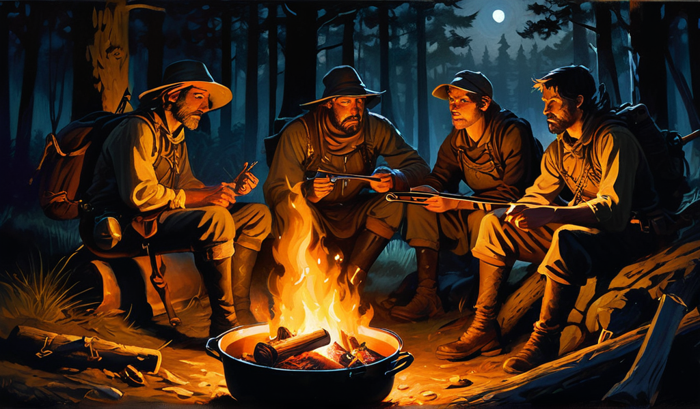
Przy ognisku leczą się rany — i dopiero tutaj nauka z drogi staje się siłą.
Żaden bohater nie przejdzie świata bez wytchnienia. Odpoczynek leczy ciało,
a zdobyte doświadczenie zamienia się w realną moc dopiero wtedy, gdy usiądziesz przy ogniu i pozwolisz
jej wybrzmieć. Jedno i drugie wymaga jednak bezpiecznego miejsca — w środku walki
nie odpoczniesz.
Krótki i długi odpoczynek
Krótki odpoczynekLeczy 1k6 + modyfikator Kondycji HP. Najwyżej dwa razy między długimi
odpoczynkami. Zajmuje około godziny.
Długi odpoczynekPełne HP i pełna mana. Zdejmuje wyczerpanie, zeruje rzuty na śmierć i —
co najważniejsze — odblokowuje zdobyte doświadczenie. Trwa około ośmiu godzin.
To celowa decyzja: punkty doświadczenia zbierasz przez całą przygodę, ale wydać
możesz je dopiero po długim odpoczynku. Rozwój postaci to chwila zadumy przy ogniu, nie odruch w
ferworze walki.
Doświadczenie
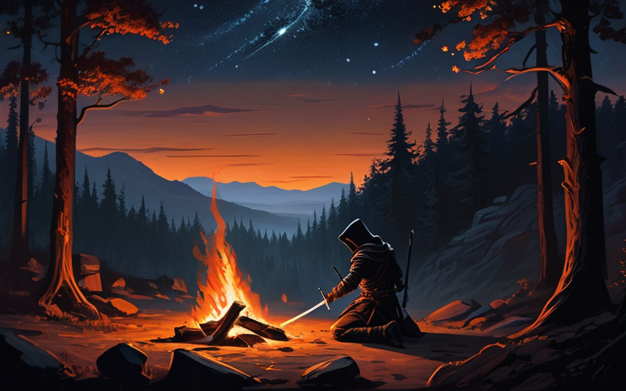
Każda przeżyta noc czegoś uczy — ale dopiero przy ogniu nauka staje się siłą.
Punkty doświadczeniaDoświadczenie (PD / XP)Zbierasz
je przez całą grę do puli „oczekującej", a po długim odpoczynku przechodzi do puli, którą możesz
wydać. (PD) zdobywasz niemal za wszystko, co popycha opowieść naprzód — od pokonanych
wrogów po samo udane przejście trudnego testu:
Skąd bierze się doświadczenie
Źródło
PD
Pokonany słaby wróg
3
Pokonany zwykły wróg
8
Pokonany elitarny wróg
30
Pokonany boss
70
Domknięty wątek sceny (beat)
30
Ukończony quest poboczny
40
Oczyszczony loch
75
Zakończona kampania
200
Pierwsze odwiedziny miejsca
15
Pierwsza rozmowa z NPC / odkrycie
5 / 10
Udany trudny test (DC 12–15 / 16–19 / 20+)
3 / 8 / 15
Jest jednak haczyk: zdobyte PD trafia do puli oczekującej i staje się
możliwe do wydania dopiero po długim odpoczynku. Dopóki nie prześpisz nocy przy
ogniu, cała nauka z drogi pozostaje surowa.
Wydawanie PD
Rozwój to wydawanie doświadczenia — dotyczy wszystkich archetypów, nie tylko
maga. Przy ogniu możesz zamienić zebrane PD na:
Na co wydasz doświadczenie
Zakup
Koszt PD
Ranga umiejętności (R1 / R2 / R3)
100 / 75 / 150
+1 do cechy (rośnie z jej wartością)
50–400
Nowy czar / ranga czaru (uczony)
75 / 50–100
Każdy zakup ma znaczenie. Ranga umiejętności kosztuje 100 / 75 / 150 PD (skok na
rangę 3 daje przecież aż +3 do rzutu — patrz rozdział III). +1 do cechy kosztuje
tym więcej, im wyższa już jest, a podnieść można ją najwyżej raz na poziom. Co istotne: gdy
podbijasz Kondycję, gra od razu przelicza twoje maksymalne HP w górę.
Przykład · Noc rozwoju
Wracasz do gospody z 180 PD w puli oczekującej i sypiasz noc — długi
odpoczynek odblokowuje doświadczenie. Przy porannym ogniu wydajesz je:
Skradanie z rangi 2 na 3 — 150 PD. Zyskujesz rangę 3 i premię z biegłości: odtąd do każdego skradania dolicza się o +3 więcej niż dotąd. Zostaje 30 PD na później.
Gdybyś zamiast tego dorzucił +1 do Kondycji (z 12 na 13), twój modyfikator CON
podskoczyłby, a gra natychmiast doliczyłaby HP za każdy posiadany poziom. Rozwój to wybór:
mistrzostwo w jednym rzemiośle albo twardsza skóra.
Progi poziomów
Twój poziom rośnie sam wraz z sumą całego zdobytego doświadczenia — niezależnie
od tego, co wydajesz. Każdy poziom zwiększa pulę HP o modyfikator Kondycji (i many o modyfikator
Inteligencji u uczonego) oraz odblokowuje wyższe tiery czarów. Oto drabina progów:
Łączne PD wymagane do kolejnych poziomów
Poziom
Łączne PD
Poziom
Łączne PD
2
100
7
1350
3
250
8
1750
4
450
9
2200
5
700
10
2700
6
1000
—
—
Progi rosną nieliniowo — każdy kolejny poziom kosztuje więcej niż poprzedni. Tak właśnie z
przeżytych nocy, jednej po drugiej, rodzi się legenda — albo kolejne imię na bezimiennym grobie.